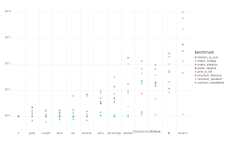
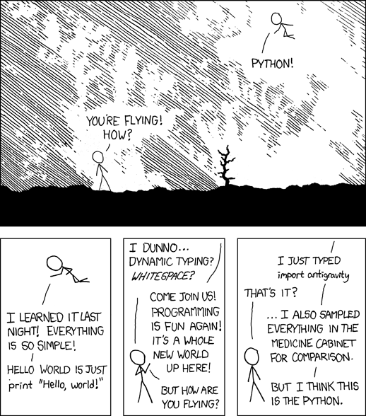
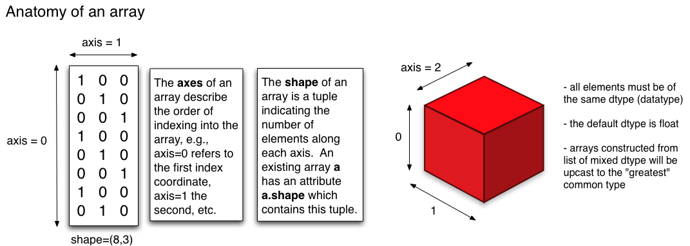
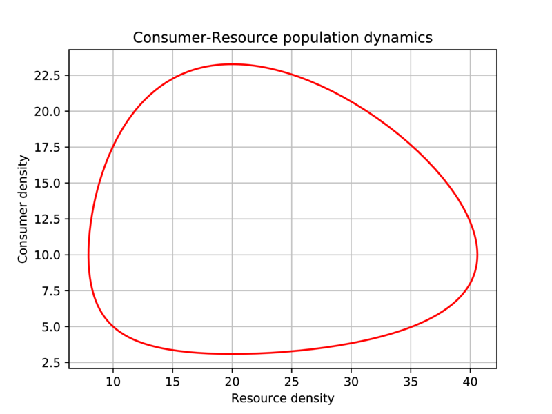
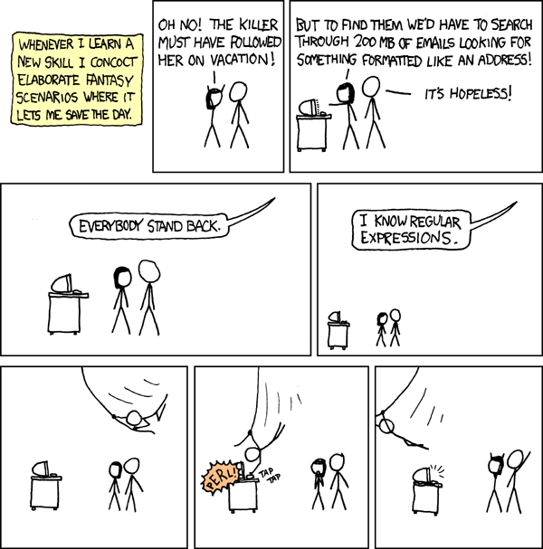

Biological Computing in Python#
Learning goals
By the end of this chapter you should be able to:
Describe a simple algorithm in plain language and check it against a worked example
Write and execute Python scripts and understand basic syntax
Work with Python data structures (lists, tuples, dictionaries, sets)
Implement control flow (conditionals, loops) in Python
Write, document, and test functions
Handle files and directories in Python
Use list comprehensions and understand functional programming basics
Debug Python code and handle errors/exceptions
Use regular expressions for pattern matching
Work with key Python packages for scientific computing
Understand Python’s object-oriented features (see OOP chapter)
Prerequisites
Before starting this chapter, you should:
Have experience using UNIX/Linux command line (covered in UNIX and Linux)
Understand basic file operations
Have Python installed
No prior Python knowledge is assumed. Variables, functions and loops are introduced in this chapter. The shell-scripting chapter introduces algorithms, but the introduction below also provides a self-contained example.
Introduction#
In the previous chapter, you used shell commands and scripts to manipulate files, combine programs and automate workflows. In this chapter, we build on those skills using Python.
Shell scripting is particularly effective for connecting existing programs and managing files. Python complements it by providing richer tools for representing data, expressing more complex logic, organizing reusable code and developing complete analyses or simulations.
From a task to an algorithm#
In shell scripting, we described a task as a sequence of precise steps before translating it into commands. That sequence is an algorithm. The same principle applies in Python: first determine what the program must do, then express those steps in Python syntax.
If you are starting here, consider four plant heights: 8, 12, 10 and 15 cm. How many exceed 10 cm? Work out the answer, then describe the steps that someone else could follow on a thousand measurements:
Start a counter at zero.
Examine each height in turn.
If the height is greater than 10 cm, increase the counter by one.
After the last height, report the counter.
These steps form an algorithm: a precise, ordered procedure for solving a specified problem. Its input is a collection of recorded heights in centimetres; its output is the number greater than 10 cm. Here, the expected answer is 2. The height of exactly 10 cm is not counted because the question says “exceed”, not “equal or exceed”.
The algorithm does not depend on a particular programming language. A program implements its steps as instructions a computer can run. In a shell script, we might implement the procedure by combining commands; in Python, we can express the data, repetition and decision directly using a collection, a loop and a conditional. Why choose Python for this work?
Why Python?#
Python complements the tools introduced in the Shell scripting chapter. Its readable syntax makes algorithms relatively easy to recognize in the resulting code, while its scientific packages support data analysis, visualization, statistics and numerical modelling. Python is therefore useful both for small standalone programs and for components of larger shell-based workflows.
Python also offers a useful balance between development time and computational performance, particularly when numerical work is handled by optimized scientific packages (see the figure below).


Fig. 11 Python’s numerical computing performance compared to some others. Smaller numbers are better. Note that the y-axis is in \(\log_{10}\) scale.
(Source: http://julialang.org/)#
What you will learn#
Turning plans into reliable programs is the focus of this chapter. You will learn to use Python to implement, test and refine algorithms for biological questions, from small calculations to complete scientific workflows. Specifically, you will learn to:
use basic Python syntax and data structures;
work with Python objects and their methods;
write and run code interactively and as programs;
implement decisions and repetition with control-flow tools;
write, use, test and debug functions;
use regular expressions and scientific Python packages;
improve the efficiency of numerical code; and
combine Python with other programs in reproducible analysis and simulation workflows.
Some terminology#
What does “float” mean? You will inevitably run into some such jargon in this chapter. The main ones you need to know are (you will learn more about these along the way):
Term |
Meaning |
|---|---|
Workspace |
The “environment” of your current Python session, including all variables, functions, objects, etc. |
Variable |
A named number, text string, boolean ( |
Function |
A computer procedure or routine that performs operations and returns some value(s), and which can be used again and again |
Module |
Variables and functions packaged into a single set of programs that can be invoked as a re-useable command (potentially with sub-commands) |
Class |
A way of grouping Variables and functions into a single object with specific properties that are inherited when you create its copy. Unlike modules, you can create (“spawn”) many copies of a class within a Python session or program |
Object |
A particular instance of a class (every object belongs to a class) that is created in a session and eventually destroyed; everything in your workspace is an object in Python! |
This Module vs. Class vs. Object business is confusing. These constructs are created to make an (object-oriented) programming language like Python more flexible and user friendly (though it might not seem so to you currently!). In practice, at least for your current purposes, you will not build you own Python classes much (but will use the inbuilt Python classes).You will however write your own modules. More on all this later (in the second Python Chapter).
Note
Data “structures” vs. “objects”: You will often see the terms “object” and “data structure” used in this and other chapters. These two have a very distinct meaning in object-oriented programming (OOP) languages like python and r. A data structure is just a “dumb” container for data (e.g., a vector). An object, on the other hand can be a data structure, but also any other variable or a function. python, being an OOP language, converts everything in the current environment to an object so that it knows what to do with each such entity — each object type has its own set of rules for operations and manipulations that python uses when interpreting your commands.
Getting started with Python#
All examples in this chapter use Python 3. Run them with python3 unless your environment already maps python to Python 3.
\(\star\) In your bash terminal (or by opening a new one with ctrl+alt+t), type:
python3
You will get a new command prompt that looks like this:
>>>
Baby steps#
Now, try some simple operations:
2 + 2 # Summation; note that comments still start with #
4
2 * 2 # Multiplication
4
2 / 2 # division
1.0
To specify an integer division, use //:
2//2
1
2 > 3 # logical operation
False
2 >= 2 # another one
True
The Zen of Python and good programming practices#
Type this in your Python terminal:
import this
The Zen of Python, by Tim Peters
Beautiful is better than ugly.
Explicit is better than implicit.
Simple is better than complex.
Complex is better than complicated.
Flat is better than nested.
Sparse is better than dense.
Readability counts.
Special cases aren't special enough to break the rules.
Although practicality beats purity.
Errors should never pass silently.
Unless explicitly silenced.
In the face of ambiguity, refuse the temptation to guess.
There should be one-- and preferably only one --obvious way to do it.
Although that way may not be obvious at first unless you're Dutch.
Now is better than never.
Although never is often better than *right* now.
If the implementation is hard to explain, it's a bad idea.
If the implementation is easy to explain, it may be a good idea.
Namespaces are one honking great idea -- let's do more of those!
They are Python’s programming principles. The Dutch reference is to Guido van Rossum, Python’s creator.
Use these aphorisms as prompts for discussion, not as an exhaustive checklist:
Explicit is better than implicit: state the inputs, assumptions and steps before coding. This builds on the shell-scripting treatment of a program as an explicit recipe.
Readability counts: choose clear names and layout so another person can follow the steps. See Python variables and writing readable Python code, and consult the official PEP 8 style guide.
Check before trusting a result: predict what a short expression will do, run it, and compare the output with your prediction. Try Baby steps and testing/running blocks of code.
Keep a useful work history: use Git to record changes, with clear commit messages. This supports the workflow developed in Shell scripting: inspect, correct, rerun and share.
In Functions, you will learn to break a larger task into smaller reusable steps; Unit testing then introduces formal checks for those steps.
ipython#
Let’s switch to the interactive Python shell, ipython that you installed above.
\(\star\) Type ctrl+D in the terminal at the Python prompt: this will exit you from the Python shell and you will see the bash prompt again.
Now type
ipython3
After some text, you should now see the ipython prompt:
In [1]:
The ipython shell has many advantages over the bare-bones, non-interactive Python shell (with the >>> prompt). For example, as in the bash shell, TAB leads to auto-completion of a command or file name (try it).
Magic commands#
Ipython has “magic commands” (which start with % ; e.g., %run). Here are some useful magic commands:
Command |
What it does |
|---|---|
|
Shows current namespace (all variables, modules and functions) |
|
Also display the type of each variable; typing |
|
Print working directory |
|
Print recent commands |
You can try any or all of these now. For example:
%who
this
That is, there are no objects in your workspace yet. Let’s create one:
a = 1
%who
a this
%whos
Variable Type Data/Info
------------------------------
a int 1
this module <module 'this' from '/usr<...>/lib/python3.12/this.py'>
Determining an object’s type#
Another useful Ipython feature is the question mark, which can be used to find what a particular Python object is, including variables you created. For example, try: ?a
This will give you detailed information about this variable (which is an object, belonging to a particular class, because this is Python!).
You can also check a variable’s type:
type(a)
int
Tip
You can configure ipython’s environment and behavior by editing the ipython_config.py file, which is located in the .ipython directory of your home (on Linux/Ubuntu). This file does not initially exist, but you can create it by running ipython profile create [profilename] in a bash terminal. Then, edit it. For example, on Ubuntu you can
nano ~/.ipython/profile_default/ipython_config.py &
And then make the changes you want to the default ipython configuration. For example, If you don’t like the blue
ipython prompt, you can type %colors linux (once inside the shell). If you want to make this color the default, then edit the ipython_config.py — search for “Set the color scheme” option in the file.
Python variables#
Now, let’s continue our Python intro. We will first learn about the Python variable types that were mentioned above. The types are:
a = 2 #integer
type(a)
int
a = 2. #Float
type(a)
float
a = "Two" #String
type(a)
str
a = True #Boolean
type(a)
bool
Thus, Python has integer, float (real numbers, with different precision levels), string and Boolean variables.
Also try ?a after defining a as a Boolean variable, and note this output in particular:
Tip
The builtins True and False are the only two instances of the class bool. The class bool is a subclass of the class int, but with only two possible values.
The idea of what a class is should be clearer now.
Note
In Python, a variable’s type is determined while the program runs (dynamic typing), as in R and unlike C or Fortran. Dynamic typing is convenient, but it can add runtime overhead. More on efficient computing later.
Python operators#
Here are common arithmetic, comparison, and Boolean operators in Python:
Operator |
Meaning |
|---|---|
|
Addition |
|
Subtraction |
|
Multiplication |
|
True division |
|
Exponentiation |
|
Remainder (modulo) |
|
Floor division |
|
Equal to |
|
Not equal to |
|
Greater than |
|
Greater than or equal to |
|
Logical AND |
|
Logical OR |
|
Logical NOT |
Use and, or, and not for Boolean logic. & is bitwise AND, while ! is not a Python operator.
At the Python prompt:
>>> 7 / 2
3.5
>>> 7 // 2
3
>>> -7 // 2
-4
>>> 7 % 2
1
/ keeps the fractional part; // rounds down to the next whole number, so -7 // 2 is -4, not -3. % gives the remainder, so 7 % 2 is 1.
Assigning and manipulating variables#
Try the following:
2 == 2
True
2 != 2
False
3 / 2
1.5
3 // 2
1
What happened here? This is an integer division, so the decimal part is lost.
'hola, ' + 'me llamo Samraat' #why not learn two human languages at the same time?!
'hola, me llamo Samraat'
x = 5
x + 3
8
y = 2
x + y
7
x = 'My string'
x + ' now has more stuff'
'My string now has more stuff'
x + y
---------------------------------------------------------------------------
TypeError Traceback (most recent call last)
Cell In[28], line 1
----> 1 x + y
TypeError: can only concatenate str (not "int") to str
Doesn’t work. No problem, we can convert from one type to another:
x + str(y)
'My string2'
z = '88'
x + z
'My string88'
y + int(z)
90
The modulo operator % is used to find the remainder after a division.
9 % 4
1
Writing readable Python code#
Before building complete .py programs, let’s establish some guidelines for readable Python. These practices apply to code entered in IPython, notebooks and saved scripts alike (also see the official Python style guide, PEP 8):
Wrap lines to be <80 characters long. You can use parentheses
()or signal that the line continues using a backslash\Use either 4 spaces for indentation or tabs, but not both. (Spaces are the preferred indentation method according to pep8)
Separate functions using a blank line
When possible, write comments on separate lines
Make sure you have chosen a particular indent type (space or tab) in whatever code IDE/editor you are using — indentation is all-important in python.
Tip
IDEs / code editors, by default, will typically impose consistency of which indentation (tab or 4 spaces) is used in and across python scripts. For example, 4 spaces is usually the default, and if you use a tab (easier, quicker) to indent code while writing, the editor will automatically convert it to 4 spaces. If your code editor does not do this automatically, you should be able to configure it to do so.
Furthermore,
Use “docstrings” to document how to use the code, and comments to explain why and how the code works (we will learn about docstrings soon, below)
Follow naming conventions, especially:
a_variable(this is “snake case”; use underscores, not spaces in variable names)_internal_variable(allowed, but use as a module-specific variable only)SOME_CONSTANTa_function(and don’t use capital letters in function names)
Never call a variable
lorOoro(why not? – you are likely to confuse it with1or0!)Use spaces around operators and after commas:
a = func(x, y) + other(3, 4)
Testing/running blocks of code#
Now that you have seen how all-important indentation of Python code is. You can test a block of code, indentation and all, by pasting it directly into the ipython terminal. Let’s try it.
Type the following code in a temporary text file:
for i in range(x):
if i > 3: #4 spaces or 2 tabs in this case
print(i)
Now, assign some integer value to a variable x:
x = 11
Then, paste this code at the ipython prompt (ctrl+shift+v), and hit enter:
for i in range(x):
if i > 3: #4 spaces or 2 tabs in this case
print(i)
Of course, this code is simple, so directly pasting works. For more complex code, you may need to use the ipython %cpaste magic function.
Python data structures#
Python variables can be stored and manipulated in:
List: |
most versatile, can contain mixed data, are “mutable” (elements can can be modified), and can contain duplicates; created by enclosing in square brackets, |
Tuple: |
like a list, but “immutable” — like a read only list; created by enclosing in round brackets, |
Dictionary: |
a kind of “hash table” of key-value pairs where the key can be number or string and values can be any Python object, but there can be only unique key-value pairs; created by enclosing in curly brackets, |
numpy arrays: |
Fast, compact, convenient for numerical computing — more on this later! |
Note
What about Pandas arrays as a data structure? We will learn about them later. These are inherently slower (less computationally efficient) than numpy arrays, and are best used in the right context (e.g., they make data exploration or visualizations more convenient, or apply functions designed to run optiomally on them).
Lists#
These are the most versatile, and can contain compound data. They are “mutable”, as will be illustrated below. Try this:
MyList = [3,2.44,'green',True]
MyList[1]
MyList[0]
Note that Python “indexing” starts at 0, not 1!
MyList[4]
As expected!
MyList[2] = 'blue'
MyList
MyList.append('a new item')
Note .append. This is an operation (a “method”) that can be applied to any “object” with the “class” list. You can check the type of any object:
%whos
type(MyList)
print(type(MyList))
Note
In Python, every class is an object, usually created by the metaclass type. Calling type(value) reports the class of value. Classes and types are closely related, but the terms are not interchangeable.
MyList
del MyList[2]
MyList
Tip
Note that in ipython you can suffix an . to a particular object (e.g., MyList.), and then hit tab to see the methods that can be applied to that object.
Tuples#
Tuples are like a list, but “immutable”, that is, a particular pair or sequence of strings or numbers cannot be modified after it is created. So a tuple is like a read-only list.
MyTuple = ("a", "b", "c")
print(MyTuple)
type(MyTuple)
MyTuple[0]
len(MyTuple)
Tuples are particularly useful when you have sets (pairs, triplets, etc) of items associated with each other that you want to store such that those associations cannot be modified.
Try this:
FoodWeb=[('a','b'),('a','c'),('b','c'),('c','c')]
FoodWeb
So we created a list of tuples (note the use of square brackets [])
FoodWeb[0]
FoodWeb[0][0]
FoodWeb[0][0] = "bbb"
Thus, tuples are “immutable”!
However, you can change a whole pairing:
FoodWeb[0] = ("bbb","ccc")
FoodWeb[0]
In the above example, why assign these food web data to a list of tuples and not a list of lists? — because we want to maintain the species associations, no matter what — they are sacrosanct.
Thus, you cannot:
add elements to a tuple. Tuples have no inbuilt append or extend method (but you can append to them with a bit of extra work - see below).
remove elements from a tuple. Tuples have no remove method.
But you can:
find elements in a tuple, since this doesn’t change the tuple.
use the
inoperator to check if an element exists in the tuple or iterate over them (explained in the control flow tools sections below).
The key point is that tuples are faster than lists, as you might expect for an immutable object (it has a fixed memory space, which makes it more efficient to retrieve). using tuples also makes your code safer as it effectively write-protects data (as long as you don’t plan to modify those particular data).
Tuples may be immutable, but you can append to them by first creating an “empty space” for the new item:
a = (1, 2, [])
a
a[2].append(1000)
a
a[2].append(1000)
a
a[2].append((100,10))
a
You can also concatenate, slice and dice them as long as they contain a single sequence or set of items:
a = (1, 2, 3)
b = a + (4, 5, 6)
b
c = b[1:]
c
b = b[1:]
b
They can be a heterogeneous set as well.
a = ("1", 2, True)
a
Sets#
You can convert a list to an mutable “set” — an unordered collection with no duplicate elements. Once you create a set you can perform set operations on it:
a = [5,6,7,7,7,8,9,9]
b = set(a)
b
c = set([3,4,5,6])
b & c # intersection
b | c # union
The key set operations in Python are:
Operation |
Command |
|---|---|
|
a.difference(b) |
|
a.issubset(b) |
|
b.issubset(a) |
|
a.intersection(b) |
|
a.union(b) |
You can also convert tuples to sets:
# Define a tuple
my_tuple = (1, 2, 3, 4, 5)
# Convert tuple to set
my_set = set(my_tuple)
# Print the set
print(my_set)
Dictionaries#
A dictionary is a set of values (any Python object) indexed by keys (string or number). So they are a bit like R lists.
genome_size = {'Homo sapiens': 3200.0, 'Escherichia coli': 4.6, 'Arabidopsis thaliana': 157.0}
genome_size
genome_size['Arabidopsis thaliana']
genome_size['Saccharomyces cerevisiae'] = 12.1
genome_size
genome_size['Escherichia coli'] = 4.6
genome_size
Because ‘Escherichia coli’ is already in the dictionary, it is not repeated.
genome_size['Homo sapiens'] = 3201.1
genome_size
Note
Tuples that contain immutable values like strings, numbers, and other tuples can be used as dictionary keys. Lists can never be used as dictionary keys, because they are mutable.
Also, every dictionary key must be unique. If you try to add a new key-value pair to a dictionary using a key that already exists, the new value will overwrite the previous value associated with that key.
Try this:
# Define a dictionary with duplicate keys
my_dict = {'a': 1, 'b': 2, 'a': 3}
# Print the dictionary
print(my_dict)
In summary, the guidelines for choosing a Python data structure are:
If your elements/data are unordered and indexed by numbers use a list
If you’re defining a constant set of values (or ordered sequences) and all you’re ever going to do with them is iterate through them, use a tuple.
If you want to perform set operations on data, use a set
If they are unordered and indexed by keys (e.g., names), use a dictionary
But why not use dictionaries for everything? – because it can slow down your code!
Copying mutable objects#
Copying mutable objects can be tricky because by default, when you create a new variable based on an existing one, Python only creates a reference to the original (that is it does not create a new, duplicate variable in memory as such). To understand this, let’s see an example.
First, try this:
a = [1, 2, 3]
b = a
Here, you have not really copied, but merely created a new “tag” (like a label) for a, called b.
a.append(4)
print(a)
print(b)
So b changed as well! This is because b is just a “pointer” or “reference” to a, not an actual copy in memory.
Now, try:
a = [1, 2, 3]
b = a[:] # This is a "shallow" copy; one level deep
a.append(4)
print(a)
print(b)
That worked! But what about more complex lists? Try this nested list:
a = [[1, 2], [3, 4]]
b = a[:]
print(a)
print(b)
Now, modify a, and then inspect both a and b:
a[0][1] = 22 # Note how I accessed this 2D list
print(a)
print(b)
So b still got modified!
This is because shallow copy is not recursive, that is, it does not copy beyond the first level of the list, leaving the values in the nested list still linked in memory to the original object a.
The solution is to do a “deep” copy:
import copy
a = [[1, 2], [3, 4]]
b = copy.deepcopy(a)
a[0][1] = 22
print(a)
print(b)
So, you need to employ deepcopy to really copy an existing object or variable and assign a new name to the copy. So, in summary, shallow copying an object won’t create objects that are independent clones, i.e., the copy is not fully independent of the original. A deep copy of an object will recursively clone “child” objects (like nested parts of a list). The clone is fully independent of the original, but creating a deep copy is slower, as it involves assigning new memory space. Keep in mind that this shallow vs. deep copy business does not just apply to lists. You can copy arbitrary objects (including custom classes) with the copy module.
Note
Why python “shallow” copies objects: This is a bit of a technical detail, but important to keep in mind: python does shallow copying of mutable objects for (computing) performance considerations. By not copying the underlying object when you re-assign a mutable object to a new (“variable”) name, python avoids unnecessary memory usage. This is known as “passing by reference” (in contrast to passing by “value”, where a new variable would be actually created in memory). That does not change the fact that shallow vs. deep copying can be confusing, of course!
Python with strings#
One of the things that makes Python so useful and versatile, is that it has a powerful set of inbuilt commands to perform string manipulations. For example, try these:
s = " this is a string "
len(s) # length of s -> 18
s.replace(" ","-") # Substitute spaces " " with dashes
s.find("s") # First occurrence of s (remember, indexing starts at 0)
s.count("s")# Count the number of "s"
t = s.split() # Split the string using spaces and make a list
t
t = s.split(" is ") # Split the string using " is " and make a list out of it
t
t = s.strip() # remove trailing spaces
t
s.upper()
s.upper().strip() # can perform sequential operations
'WOrD'.lower() # can perform operations directy on a literal string
Getting help#
You can do this:
?s.upper
Also try help() at the Python/ipython prompt.
Exercises: Python data structures#
Complete tuple.py and dictionary.py from the MQB code/ directory. For each task:
Predict the result before running the script.
Complete the unfinished code without changing the supplied input data.
Run the script with
python3and compare its output with your prediction.Use clear variable names and briefly comment any decision that is not obvious from the code.
You are finished when both scripts run without errors and you can explain why a tuple or dictionary is appropriate for each task.
Loops#
What exactly is going on in the piece of code above? What is i? What does range(x) do?
Basically, this piece of code runs a loop (“loops”) over the full range of x numbers, printing each one of them.
First, let’s understand the range() function. This function generates, as the name suggests, a range of integers depending on the input to it. So, for example, range(10) generates 10 numbers, starting at 0:
for i in range(10):
print(i)
The start point is 0 because this is Python (it will start at 1 in R, for example). Note that if you try to runrange() by itself, it will not actually produce a range of numbers. For example:
a = range(10)
a
Printing a shows a compact description of the range, not a list of all its values. range(10) represents the integers from 0 up to, but not including, 10.
A range is a reusable iterable, not an iterator or a generator. It stores a compact description of the sequence rather than all the integers, so a large range uses little memory. A loop obtains an iterator from the range to retrieve its values. Use list(a) if you actually need a list of those values; that list stores them all.
You can also use range() to generate numbers (and loop over) from a specific range of integers. For example, to generate a range from 1 to 5, do:
for i in range(1, 6):
print(i)
Yes, it is slightly counter-intuitive that you have to use range(1, 6) to generate numbers from 1 to 5, but that’s inevitable (and something to get used to) because of the fact that Python’s indexing starts at 0!
You can also generate a set of indices that skips values using range() like so:
for i in range(2, 10, 2): # skip odd numbers
print(i)
Play around with range a bit, and also check out its documentation. This is a very important function that you will use again and again!
Note
In Python 2, range() creates a list, while xrange() provides a lazy sequence. In Python 3, range() is lazy, like Python 2’s xrange(), but it is not simply a renamed version. Use range() in Python 3.
The variable i in our loop is the loop variable: Python assigns the next value from the iterable to it on each iteration. In for i in range(10), its first value is 0. That value happens to match the first position in this range, but a loop variable is not necessarily an index and is not the iterator. Choose a meaningful name for the values you are working with, such as height_cm when looping over plant heights.
Iterator vs Iterable#
An iterable is an object from which Python can obtain an iterator using the built-in function iter(). Lists, tuples, dictionaries, strings and ranges are examples. A list is iterable, but it is not itself an iterator.
An iterator remembers progress through values. The built-in function next() retrieves its next value; when there are no more values, it raises StopIteration. Advancing an iterator consumes values from that iterator, not from the original list. An iterator is also iterable: iter() on it returns the same iterator, rather than restarting it.
A for loop obtains an iterator from its iterable, repeatedly retrieves the next value and assigns it to the loop variable, then ends when the iterator raises StopIteration. You do not normally need to call iter() or next() yourself when writing a for loop.
To see the difference, try the list and iterator examples below:
my_iterable = [1,2,3]
type(my_iterable)
my_iterator = iter(my_iterable)
type(my_iterator)
next(my_iterator) # same as my_iterator.__next__()
next(my_iterator)
next(my_iterator)
next(my_iterator)
Once, when you iterated all items in an iterator, and no more data are available, and a StopIteration exception is raised.
Note
Generators are a kind of iterator. A generator expression, such as (height_cm * 2 for height_cm in heights), produces values as they are requested. A generator function uses yield to supply a value and pause until the next request. Every generator is an iterator, and every iterator is iterable; the reverse relationships are not guaranteed. iter([8, 12, 10]) is an iterator but not a generator, and range(3) is iterable but neither an iterator nor a generator.
Here is a comparison using plant heights. Predict each output before running it:
heights = [8, 12, 10]
height_iterator = iter(heights)
print(next(height_iterator))
print(list(height_iterator))
print(list(height_iterator))
print(heights)
height_generator = (height_cm * 2 for height_cm in heights)
print(next(height_generator))
print(list(height_generator))
print(list(height_generator))
height_range = range(3)
print(list(height_range))
print(list(height_range))
The output is:
8
[12, 10]
[]
[8, 12, 10]
16
[24, 20]
[]
[0, 1, 2]
[0, 1, 2]
next() consumes one value; list() consumes the remaining values from that iterator and stores them in a new list. Here, consumption means advancing the iterator, not deleting values from the original heights list. An exhausted iterator has no remaining values to return; consumption does not itself imply a memory saving. The generator also remembers its progress and cannot restart after exhaustion; make a new generator to repeat the calculation. The range, like the list, can supply a fresh iterator for another pass. Being iterable does not itself guarantee reuse: iterators, including generators, are iterable too.
Generators can save memory by producing values on demand instead of storing a complete result list, but that is distinct from consumption. For example, a loop can process each generated value without collecting every result. Calling list(height_generator), as above, instead creates and stores a list of the remaining results. The original input list heights remains in memory in this example. Not every iterator generates new values or saves memory: the list iterator above still refers to an existing list.
See Python’s official documentation on iterator types and generator expressions.
Some loops examples#
Write the following, and save them to loops.py:
# FOr loops
for i in range(5):
print(i)
my_list = [0, 2, "geronimo!", 3.0, True, False]
for k in my_list:
print(k)
total = 0
summands = [0, 1, 11, 111, 1111]
for s in summands:
total = total + s
print(total)
# WHILE loop
z = 0
while z < 100:
z = z + 1
print(z)
Functions#
In Python, you delineate a function (recall what a function means from the table above) by using indentation. For example:
def foo(x):
x *= x # same as x = x*x
print (x)
return x
Now you will have a function object called foo in your workspace. You can check this using the %whos magic command, which lists and describes all the objects in your workspace:
%whos
So, foo is a function stored in memory (at address given by the value 0x... in the Data/Info column), and ready to serve you!
Now “call it”:
foo(2)
Note that the first, print command only outputs the value of x to the terminal, whereas, the second return command actually outputs it so that you can “capture” and store it.
To see this distinction, let’s try the following.
def foo(x):
x *= x # same as x = x*x
print (x)
return x
y = foo(2)
y
type(y)
Thus, the output of foo was stored as a new variable y.
def foo(x):
x *= x # same as x = x*x
print (x)
# return x
y = foo(2)
y
type(y)
So, if we don’t explicitly return the value of x, the output of foo cannot be stored.
Control flow tools#
OK, let’s get deeper into Python code. A computer script or program’s control flow is the order in which the code executes. Upto now, you have written scripts with simple control flows, with the code executing statements from the top to bottom. But very often, you want more flexible flows of commands and statements, for example, where you can switch between alternative commands depending on some condition. This is possible using control flow tools. Let’s learn Python’s control flow tools hands-on.
Conditionals#
Now that we know how to define functions in Python, let’s look at conditionals that allow you fine-grained control over the function’s operations.
Let’s start with the if statement, which allows you to control when to execute a statement. This is the basic syntax:
if <expr>:
<statement>
<expr> is the (boolean) condition (True / False) that needs to be met for the <statement> to be executed.
Let’s look at a basic example.
x = 0; y = 2
if x < y: # "Truthy"
print('yes')
if x:
print('yes')
No output appears because x is zero. Zero is an integer, but it is falsy, so the body of if x: does not run.
if x==0:
print('yes')
if y:
print('yes')
if y == 2:
print('yes')
x = True # make x boolean
if x: # now it works
print('yes')
if x == True:
print('yes')
We can now try combining functions and the if conditional.
\(\star\) run the following functions one by one, by pasting the block in the ipython command line. First, type all them all in a script and save it as cfexercises1.py. Then you can send them block by block easily to the command line assuming you have set your code editor to allow selections of code to be sent to terminal directly using a key binding (typically , ctrl+enter).
def foo_1(x):
return x ** 0.5
def foo_2(x, y):
if x > y:
return x
return y
def foo_3(x, y, z):
if x > y:
x, y = y, x
if x > z:
x, z = z, x
if y > z:
y, z = z, y
return [x, y, z]
def foo_4(x):
result = 1
for i in range(1, x + 1):
result = result * i
return result
def foo_5(x): # a recursive function that calculates the factorial of x
if x == 1:
return 1
return x * foo_5(x - 1)
def foo_6(x): # Calculate the factorial of x in a different way; no if statement involved
facto = 1
while x >= 1:
facto = facto * x
x = x - 1
return facto
Think about what each of the foo_x function does before running it. Note that foo_5 is a recursive function, meaning that the function calls itself. Note that the factorial of 0 is also 1, i.e., \(0! = 1\), but foo_5 and foo_6 cannot handle this. You may wish to modify the functions to fix this!
More examples of loops and conditionals combined#
\(\star\) Write the following functions and save them to cfexercises2.py:
########################
def hello_1(x):
for j in range(x):
if j % 3 == 0:
print('hello')
print(' ')
hello_1(12)
########################
def hello_2(x):
for j in range(x):
if j % 5 == 3:
print('hello')
elif j % 4 == 3:
print('hello')
print(' ')
hello_2(12)
########################
def hello_3(x, y):
for i in range(x, y):
print('hello')
print(' ')
hello_3(3, 17)
########################
def hello_4(x):
while x != 15:
print('hello')
x = x + 3
print(' ')
hello_4(0)
########################
def hello_5(x):
while x < 100:
if x == 31:
for k in range(7):
print('hello')
elif x == 18:
print('hello')
x = x + 1
print(' ')
hello_5(12)
# WHILE loop with BrEAK
def hello_6(x, y):
while x: # while x is True
print("hello! " + str(y))
y += 1 # increment y by 1
if y == 6:
break
print(' ')
hello_6 (True, 0)
Try to predict how many times “hello” will be printed before testing each of these functions.
Note
Note how, in the last function above, the break directive exits the loop when the condition is met. If you did not have this, you would get an infinite loop! (and would need to use Ctrl+c to stop it). Note also that break only breaks out of the current loop. It does not stop the execution of the rest of the code that may be in that program or script.
From an algorithm to Python#
Return to the plant-height question from the introduction: how many of the heights 8, 12, 10 and 15 cm exceed 10 cm? First trace this complete program by hand, then run it. Write down the value of above_threshold after each height.
heights_cm = [8, 12, 10, 15]
above_threshold = 0
for height_cm in heights_cm:
if height_cm > 10:
above_threshold += 1
print(above_threshold)
The counter starts at zero. The loop examines each height, and the conditional decides whether to increase the counter:
Height (cm) |
Is |
Counter after this height |
|---|---|---|
8 |
No |
0 |
12 |
Yes |
1 |
10 |
No |
1 |
15 |
Yes |
2 |
The program prints 2, matching the answer predicted before coding. Now change > to >= to answer a different question: how many heights are at least 10 cm? Predict the answer before rerunning it, and explain which row changes.
Comprehensions#
Python offers a way to combine loops and logical tests / conditionals in a single line of code to transform any iterable object (list, set, or dictionary, over which you can iterate) into another object, after performing some operations on the elements in the original object. That is, they are a compact way to create a new list, dictionary or object from an existing one. As you might expect, there are three types of comprehensions, each corresponding to what the target object is (list, set, dictionary).
Let’s look at how list comprehensions work:
x = [i for i in range(10)]
print(x)
This is the same as writing the following loop:
x = []
for i in range(10):
x.append(i)
print(x)
Here’s another example:
x = [i.lower() for i in ["LIST","COMPrEHENSIONS","ArE","COOL"]]
print(x)
Which is same as the loop:
x = ["LIST","COMPrEHENSIONS","ArE","COOL"]
for i in range(len(x)): # explicit loop
x[i] = x[i].lower()
print(x)
Or this loop:
x = ["LIST","COMPrEHENSIONS","ArE","COOL"]
x_new = []
for i in x: # implicit loop
x_new.append(i.lower())
print(x_new)
How about a nested loop? Let’s try an example where we “flatten” a 3 × 3 matrix into a one-dimensional list (all numbers across rows in a single sequence):
matrix = [[1,2,3],[4,5,6],[7,8,9]]
flattened_matrix = []
for row in matrix:
for n in row:
flattened_matrix.append(n)
print(flattened_matrix)
A list comprehension to do the same:
matrix = [[1,2,3],[4,5,6],[7,8,9]]
flattened_matrix = [n for row in matrix for n in row]
print(flattened_matrix)
This list comprehension uses a nested loop, so its syntax is a bit harder to understand than the list comprehension using a single loop. So let’s dissect it:
We need to loop over each row in the given 2D list and append it to the previous row in the new
flattened_matrixobject (list). To understand how the list comprehension achieves this, let’s divide it into its three parts:
flatten_matrix = [n
for row in matrix
for n in row]
The first line
nstates what we want to append in the new flattened list.The second line is the outer loop (same as
for row in matrix:in the nested loop above); it returns the rows (sub-lists) inside the matrix one by one ([1, 2, 3],[4, 5, 6],[7, 8, 9]The third line is the inner loop (same as
for n in row:in the nested loop above); it returns all the values inside the row (the sub-list) and appends them to the growing flattened listflattened_matrix. That is, if row = [1, 2, 3],for n in rowreturns1,2,3one by one, and appends it toflattened_matrixin their original sequence.
Set and Dictionary comprehensions work in an analogous way. For example, create a set of all the first letters in a sequence of words using a loop:
words = ["These", "are", "some", "words"]
first_letters = set()
for w in words:
first_letters.add(w[0])
print(first_letters)
type(first_letters)
Note that sets are unordered (the first letters don’t appear in the order you might expect).
Now, the same as a set comprehension:
words = ["These", "are", "some", "words"]
first_letters = {w[0] for w in words} # note the curly brackets
print(first_letters)
type(first_letters)
Now, type the following in a script file called oaks.py and test it:
## Finds just those taxa that are oak trees from a list of species
taxa = [ 'Quercus robur',
'Fraxinus excelsior',
'Pinus sylvestris',
'Quercus cerris',
'Quercus petraea',
]
def is_an_oak(name):
return name.lower().startswith('quercus ')
##Using for loops
oaks_loops = set()
for species in taxa:
if is_an_oak(species):
oaks_loops.add(species)
print(oaks_loops)
##Using list comprehensions
oaks_lc = set([species for species in taxa if is_an_oak(species)])
print(oaks_lc)
##Get names in UPPEr CASE using for loops
oaks_loops = set()
for species in taxa:
if is_an_oak(species):
oaks_loops.add(species.upper())
print(oaks_loops)
##Get names in UPPEr CASE using list comprehensions
oaks_lc = set([species.upper() for species in taxa if is_an_oak(species)])
print(oaks_lc)
Carefully compare the looping vs list comprehension way for the two tasks (find oak tree species names and get names in upper case) to make sure you understand what’s going on.
Note
Don’t go mad with list comprehensions — code readability is more important than squeezing lots into a single line! They can also make your code run more slowly or use more memory in some cases (we will learn about this more in the second python Chapter).
Exercises: loops and comprehensions#
Complete lc1.py and lc2.py from the MQB code/ directory. Each file asks you to solve the same transformation using a conventional loop and a comprehension.
For each result, first work out a small example by hand, then run the script with python3. Confirm that the loop and comprehension produce equal results. Keep both implementations so their readability can be compared.
You are finished when both scripts run without errors, the paired results agree, and you can explain the order of the clauses in each comprehension.
Variable scope#
One important thing to note about functions, in any programming language, is that variables created inside functions are invisible outside of it, nor do they persist once the function has run unless they are explicitly returned. These are called “local” variables, and are only accessible inside their function.
Here is an example. First, type and run this block of code:
i = 1
x = 0
for i in range(10):
x += 1
print(i)
print(x)
Let’s break this down to understand the outputs and what’s going on in terms of variable scope:
i = 1
x = 0
i, x # or print(i, x)
So we created two new variables, which are now in memory (your current “workspace”).
for i in range(10):
x += 1
i, x
So i, which was originally stored with a value of 1 in your workspace has now been updated to 9 (because the loop ran over all the numbers from 0 to 9), and x is has been updated to 10 due to the successive summation that the loop performs.
That is, the operations on i and x inside the loop were in fact on the variables in the main workspace (they were changed everywhere).
Now, let’s encapsulate the above code in a function:
i = 1
x = 0
def a_function(y):
x = 0
for i in range(y):
x += 1
return x
a_function(10)
print(i)
print(x)
So i and x did not get updated in your workspace despite the fact that they were within the function! This is because the scope of the variables inside a function is retricted to within that function. That is, within the function,i and x were created and modified in a separate location in your compiter’s memory, leaving the original variables with the same names unchanged.
Again, let’s break this code down to understand whats’s going on.
First run this in your ipython commandline:
i = 1
x = 0
def a_function(y):
x = 0
for i in range(y):
x += 1
return x
Now try whos in your ipython3 commandline, which will show you that a_function has indeed been saved as a Python function object (and so is raring to go!).
Now,
a_function(10)
This returns 10 because you asked the function to, resturn the final value of x with return x
x
But x in your main workspace is still 0 because even if you asked the function to return x, that made it pront x that was modified within the function to the screen, but this new, modified x is not actually saved to oyur main workspace (i.e., the original x in your main workspace remains untouched).
To replace the old x with the new one resulting from running our function, you have to explicitly “catch” it by reassigning the variable name x to the output of the function:
x = a_function(10)
x
Thus, the things to note from this second example:
Both
xandiare variables localised to the function (their scope is limited to within it)xwas only updated in the main workspace, outside the function, when it was explicitlyreturned from the function and you explicitly reassigned the variable namexto the function’s output.iremained unchanged outside the function because it was notreturned.
Try returning both x and i (with a return x,y instead of return x in the function).
Global variables#
In contrast, you can designate certain variables to be “global” so that they visible both inside and outside of functions in Python, like any other programming language.
To understand this, let’s look at an example.
First try this:
_a_global = 10 # a global variable
if _a_global >= 5:
_b_global = _a_global + 5 # also a global variable
print("Before calling a_function, outside the function, the value of _a_global is", _a_global)
print("Before calling a_function, outside the function, the value of _b_global is", _b_global)
def a_function():
_a_global = 4 # a local variable
if _a_global >= 4:
_b_global = _a_global + 5 # also a local variable
_a_local = 3
print("Inside the function, the value of _a_global is", _a_global)
print("Inside the function, the value of _b_global is", _b_global)
print("Inside the function, the value of _a_local is", _a_local)
a_function()
print("After calling a_function, outside the function, the value of _a_global is (still)", _a_global)
print("After calling a_function, outside the function, the value of _b_global is (still)", _b_global)
print("After calling a_function, outside the function, the value of _a_local is ", _a_local)
The things to note from this example:
Although
_a_globalwas overwritten inside the function, what happened inside the function remained inside the function (What happens in Vegas…)The variable
_a_localdoes not persist outside the function (therefore you get theNameErrorat the end)Also note that
_a_globalis just a naming convention – nothing special about this variable as such.
Of course, if you assign a variable outside a function, it will be available inside it even if you don’t assign it inside that function:
_a_global = 10
def a_function():
_a_local = 4
print("Inside the function, the value _a_local is", _a_local)
print("Inside the function, the value of _a_global is", _a_global)
a_function()
print("Outside the function, the value of _a_global is", _a_global)
So _a_global was available to the function, and you were able to use it in the print command.
If you really want to modify or assign a global variable from inside a function (that is, and make it available outside the function), you can use the global keyword:
_a_global = 10
print("Before calling a_function, outside the function, the value of _a_global is", _a_global)
def a_function():
global _a_global
_a_global = 5
_a_local = 4
print("Inside the function, the value of _a_global is", _a_global)
print("Inside the function, the value _a_local is", _a_local)
a_function()
print("After calling a_function, outside the function, the value of _a_global now is", _a_global)
So, using the global specification converted _a_global to a truly global variable that became available outside that function (overwriting the original _a_global).
The global keyword also works from inside nested functions, but it can be slightly confusing:
def a_function():
_a_global = 10
def _a_function2():
global _a_global
_a_global = 20
print("Before calling a_function2, value of _a_global is", _a_global)
_a_function2()
print("After calling a_function2, value of _a_global is", _a_global)
a_function()
print("The value of a_global in main workspace / namespace now is", _a_global)
That is, using the global keyword inside the inner function _a_function2 resulted in changing the value of _a_global in the main workspace / namespace to 20, but within the scope of _a_function, its value remained 10!
Compare the above with this:
_a_global = 10
def a_function():
def _a_function2():
global _a_global
_a_global = 20
print("Before calling a_function2, value of _a_global is", _a_global)
_a_function2()
print("After calling a_function2, value of _a_global is", _a_global)
a_function()
print("The value of a_global in main workspace / namespace is", _a_global)
Now, because _a_global was defined in advance (outside the first function), when a_function was run,
This value was “inherited” within
a_functionfrom the main workspace / namespace,It was then given a
globaldesignation in the inner function_a_function2,And then, in the inner function
_a_function2, when it was changed to a different value, it was modified everywhere (both within thea_function’s scope/namespace and main workspace / namespace) .
Warning
In general, avoid assigning globals because you run the risk of “exposing” unwanted variables to all functions within your workspace / namespace. Furthermore, avoid assigning globals within functions or sub-functions, as we did in the last two examples above!
Tip
But in some cases you may find it useful to assign one or more global variables that are shared across multiple modules/functions. You can do this by assigning those variables as global at the start of the script/program, but a better, safer option is to create a separate module (say, called config.py) to hold the global variables and then import it where needed.
\(\star\) Collect all blocks of code above illustrating variable scope into one script called scope.py and test it (run and check for errors).
Importance of the return directive#
In the context of scope of variables, it is also important to keep in mind that in Python, arguments are passed to a function by assignment. This is a bit of a technical detail that we don’t need to go into here, but basically, in practice, this means that for mutable objects such as lists, unless you do something special, if a function modifies the (mutable) variable inside it, the original variable outside the function remains unchanged.
Let’s look at an example to understand this:
def modify_list_1(some_list):
print('got', some_list)
some_list = [1, 2, 3, 4]
print('set to', some_list)
my_list = [1, 2, 3]
print('before, my_list =', my_list)
modify_list_1(my_list)
print('after, my_list =', my_list)
The original list remains the same even though it is changed inside the function, as you would expect (what happens in Vegas…)
This is where the return directive becomes important. Now modify the function to return the value of the input list:
def modify_list_2(some_list):
print('got', some_list)
some_list = [1, 2, 3, 4]
print('set to', some_list)
return some_list
my_list = modify_list_2(my_list)
print('after, my_list =', my_list)
So now the original my_list is changed because you explicitly replaced it. This reinforces the fact that explicit return statements are important.
And if we do want to modify the original list in place, use append:
def modify_list_3(some_list):
print('got', some_list)
some_list.append(4) # an actual modification of the list
print('changed to', some_list)
my_list = [1, 2, 3]
print('before, my_list =', my_list)
modify_list_3(my_list)
print('after, my_list =', my_list)
That did it. So append will actually change the original list object. However, the fact still remains that you should use a return statement at the end of the function to be safe and be able to capture the output (and use it to replace an existing variable if needed).
Note
returning a None: Even if you do not add a return directive at the end of a function, python does in fact return something: a None value, which stands for a NULL value (no value at all; so that something is a nothing!). You can use an return None in a python function if you want to be explicit, or use just return to completely end the execution of the code (like exit in a shell script). This is different from using the break directive, which you were introduced above under control flow tools.
Exercises: functions and control flow#
Return to cfexercises1.py, which you created in the control-flow section. Make every foo_* function accept arguments and return a result without calling input().
Add representative calls under an if __name__ == "__main__": guard. Include boundary checks where they matter—for example, confirm that your factorial functions handle zero—and compare functions that are intended to calculate the same result.
Run the file with:
python3 cfexercises1.py
You are finished when the calls produce the results you predicted, equivalent implementations agree, and importing the file does not run the example calls.
Writing and running Python programs#
Modules and code compartmentalization#
A Python module is a .py file containing reusable definitions, such as functions and variables. Importing a module lets another script or notebook use those definitions without copying the code.
Modules help keep programs organized, reduce repeated code, and make functions easier to test and reuse.
Importing modules#
There are several ways to import a module or one of its functions:
import my_modulemakes the module available; call a function asmy_module.my_function().from my_module import my_functionimports one function, which can then be called asmy_function().import my_module as mmgives a long module name a shorter alias; call its function asmm.my_function().
Avoid from my_module import *: it can overwrite names and make it unclear where a function came from. You can also access a module variable with my_module.my_variable.
The later control_flow.py example uses these import forms with a real module from this chapter.
Running Python scripts#
Instead of pasting or sending code to the Python command prompt like you did above, let’s learn how to write it into a script and run it.
\(\star\) Write the following code into a file called MyExampleScript.py:
def foo(x):
x *= x # same as x = x*x
print(x)
foo(2)
Using the UNIX shell#
Open another bash terminal, and cd to directory where you have saved this script file. Then, run it using:
python3 MyExampleScript.py
From the UNIX shell, using IPython#
Alternatively, you can use ipython:
ipython3 MyExampleScript.py
With the same result.
From within the IPython shell#
You can also execute Python scripts from within the ipython shell with
%run MyExampleScript.py
That is, enter ipython from bash (or switch to a terminal where you are already in the ipython shell), and then use the run command with the name of the script file.
To run the script from the native Python shell, you would use exec(open("./filename").read()), but we won’t bother doing that (though you can/should try it out for fun!).
Structuring Python programs#
Now let’s start with proper Python programs.
The difference between scripts (which you have been writing till now) and programs is that the latter can be “compiled” into a self standing application or utility. This distinction will not mean much to you currently, but eventually will, once you have converted a script to a program below!
We will start with a “boilerplate” (template) program, just as we did in the shell scripting chapter.
\(\star\) Type the code below and save as boilerplate.py in the coursework project’s root-level code/ directory:
#!/usr/bin/env python3
"""Description of this program or application.
You can use several lines"""
__appname__ = '[application name here]'
__author__ = 'Your Name (your@email.address)'
__version__ = '0.0.1'
__license__ = "License for this code/program"
## imports ##
import sys # module to interface our program with the operating system
## constants ##
## functions ##
def main(argv):
""" Main entry point of the program """
print('This is a boilerplate') # NOTE: indented using two tabs or 4 spaces
return 0
if __name__ == "__main__":
"""Makes sure the "main" function is called from command line"""
status = main(sys.argv)
sys.exit(status)
Now open another bash terminal, and cd to the code directory and run the code. Then, run the code (NOT in the Python or ipython shell, but the bash shell! ):
python3 boilerplate.py
You should get:
This is a boilerplate
Alternatively, you can use ipython like you did above:
ipython3 boilerplate.py
With the same result.
And again, like before, you can also execute this program file from within the ipython shell with run MyScript.py. Enter ipython from bash (or switch to a terminal where you are already in the ipython shell), and do:
%run boilerplate.py
Components of the Python program#
Now let’s examine the elements of your first, boilerplate code:
The shebang#
Just like UNIX shell scripts, the first “shebang” line tells the computer where to look for python. It determines the script’s ability to be executed when compiled as part of a standalone program. It isn’t absolutely necessary, but it is good practice to use it, and it is also also useful because when someone examines the file in an editor, they immediately know what they’re looking at.
However, which shebang line you use is important. Here by using #!/usr/bin/env python3 we are specifying the location to the Python executable in your machine that the rest of the script needs to be interpreted with. You may use #!/usr/bin/python instead, but this might not work on somebody else’s machine if the Python executable isn’t actually located at /usr/bin/.
The Docstring#
Triple quotes start a “docstring” comment, which is meant to describe the operation of the script or a function/module within it. Docstrings are considered part of the running code, while normal comments are stripped. Hence, you can access your docstrings at run time. It is a good idea to have doctrings at the start of every Python script and module as it can provide useful information to the user and you as well, down the line.
You can access the docstring(s) in a script (both for the overall script and the ones in each of its functions), by importing the function (say, my_func), and then typing help(my_func) or ?my_func in the Python or ipython shell. For example, try import boilerplate and then help(boilerplate) (but you have to be in the Python or ipython shell).
import boilerplate
help(boilerplate)
Note
Docstrings vs. Comments: In short, Docstrings tell the user how to use some python code, while and Comments explain why and how certain parts of the code work. Thus Docstrings are are enhanced comments that serve as documentation for python code, including for any functions/modules and classes in it. Comments explain non-obvious portions of the code.
Internal Variables#
“__” signal “internal” variables (never name your variables so!). These are special variables names reserved by Python for its own purposes. For more on the usage of underscores in Python, see this.
Function definitions and “modules”#
def indicates the start of a Python function (aka “module”); all subsequent lines must be indented.
It’s important to know that somewhat confusingly, pythonistas call a file containing function defitions) and statements (e.g., assignments of constant variables) a “module”. There is a practical reason (there’s always one!) for this. You might want to use a particular set of Python def’s (functions) and statements either as a standalone function, or use it or subsets of it from other scripts. So in theory, every function you define can be a sub-module usable by other scripts.
In other words, definitions from a module can be imported into other modules and scripts, or into the main program itself.
The last few lines, including the main function/module are somewhat esoteric but important; more on this below.
Why include __name__ == "__main__" and all that jazz#
When you run a Python module with or without arguments, the code in the called module will be executed just as if you imported it, but with the __name__ set to "__main__" (analogous to the special $0 variable in shell scripts).
So adding this code at the end of your module:
if (__name__ == "__main__"):
directs the Python interpreter to set the special __name__ variable to have a value "__main__", so that the file is usable as a script as well as an importable module (important for packaging and re-usability).
How do you import? Simply as (in Python or ipython shell):
import boilerplate
Then type
boilerplate
So when you ran your module by itself using python3 boilerplate.py (as you did above by opening a separate bash shell), having __name__ = "__main__" made the Python interpreter assign the string "__main__" to the __name__ variable inside the module, so that the your module execution was forced to start with the control flow first passing through the main function.
On the other hand, if some other module (not boilerplate) is the main program, and you want to import the boilerplate module into it (with import boilerplate), the interpreter looks at the filename of your module (boilerplate.py), strips off the .py, and assigns that string (boilerplate) to the imported module’s __name__ variable instead, skipping the command(s) under the if statement of boilerplate.py.
Let’s write a script to illustrate this.
\(\star\) Type and save the following in a script file called using_name.py:
#!/usr/bin/env python3
# Filename: using_name.py
if __name__ == '__main__':
print('This program is being run by itself!')
else:
print('I am being imported from another script/program/module!')
print("This module's name is: " + __name__)
Now run it:
%run using_name.py
Now, try:
import using_name
Tip
Also please look up the official python doc for modules.
What is sys.argv?#
In your boilerplate code, as any other Python code, argv is the “argument variable”. Such variables are necessarily very common across programming languages, and play an important role — argv is a variable that holds the arguments you pass to your Python script when you run it (like $var in shell scripts). sys.argv is simply an object created by Python using the sys module (which you imported at the beginning of the script) that contains the names of the argument variables in the current script.
To understand this in a practical way, write and save a script called sysargv.py:
#!/usr/bin/env python3
import sys
print("This is the name of the script: ", sys.argv[0])
print("Number of arguments: ", len(sys.argv))
print("The arguments are: " , str(sys.argv))
Now run sysargv.py with different numbers of arguments:
%run sysargv.py
run sysargv.py var1 var2
run sysargv.py 1 2 var3
As you can see the first variable is always the file name, and is always available to the Python interpreter.
Then, the command main(argv=sys.argv) directs the interpreter to pass the argument variables to the main function.
Tip
As the number of arguments increases, handling sys.argv becomes less readable and more error-prone. You must manually validate and parse each argument, which can lead to complex code. Instead of sys.argv, you may want to use argparse when building scripts or programs that require more complex argument parsing, error handling, and user-friendly help messages.
What is main(argv) ?#
Now for the final bit of your Python boilerplate:
def main(argv):
print('This is a boilerplate') # NOTE: indented using two tabs or four spaces
This is the main function. Arguments obtained in the if (__name__ == "__main__"): part of the script are “fed” to
this main function where the printing of the line “This is a boilerplate” happens.
Finally, sys.exit()#
OK, finally, what about:
sys.exit(status)
It’s just a way to terminate and exit the Python program in an explicit manner, returning an appropriate status code (recall the exit command from the shell scripting chapter). In this case, we have decided that main() returns 0 on a successful run, so sys.exit(status) will return zero (because status = 0 upon successful termination of the main program) indicating “successful termination”.
Try putting sys.exit("I am exiting right now!") in other places in boilerplate.py and see what happens.
A program-with-control-flows example#
Let’s now look at an example of a script that uses various control flow tools within a standard Python program structure.
To begin, first copy and rename boilerplate.py (to make use of it’s existing structure and save you some typing):
cp boilerplate.py control_flow.py
Then type the following script into control_flow.py:
#!/usr/bin/env python3
"""Some functions exemplifying the use of control statements"""
#docstrings are considered part of the running code (normal comments are
#stripped). Hence, you can access your docstrings at run time.
__author__ = 'Samraat Pawar (s.pawar@imperial.ac.uk)'
__version__ = '0.0.1'
import sys
def even_or_odd(x=0): # if not specified, x should take value 0.
"""Find whether a number x is even or odd."""
if x % 2 == 0: #The conditional if
return f"{x} is Even!"
return f"{x} is Odd!"
def largest_divisor_five(x=120):
"""Find which is the largest divisor of x among 2,3,4,5."""
largest = 0
if x % 5 == 0:
largest = 5
elif x % 4 == 0: #means "else, if"
largest = 4
elif x % 3 == 0:
largest = 3
elif x % 2 == 0:
largest = 2
else: # When all other (if, elif) conditions are not met
return f"No divisor found for {x}!" # Each function can return a value or a variable.
return f"The largest divisor of {x} is {largest}"
def is_prime(x=70):
"""Find whether an integer is prime."""
for i in range(2, x): # "range" returns a sequence of integers
if x % i == 0:
print(f"{x} is not a prime: {i} is a divisor")
return False
print(f"{x} is a prime!")
return True
def find_all_primes(x=22):
"""Find all the primes up to x"""
allprimes = []
for i in range(2, x + 1):
if is_prime(i):
allprimes.append(i)
print(f"There are {len(allprimes)} primes between 2 and {x}")
return allprimes
def main(argv):
print(even_or_odd(22))
print(even_or_odd(33))
print(largest_divisor_five(120))
print(largest_divisor_five(121))
print(is_prime(60))
print(is_prime(59))
print(find_all_primes(100))
return 0
if (__name__ == "__main__"):
status = main(sys.argv)
sys.exit(status)
Now run the code:
run control_flow.py
You can also call any of the functions within control_flow.py:
even_or_odd(11)
This is possible without explicitly importing the modules because you are only running one script. You would have to do an explicit import if you needed a module from another Python script file.
Tip
Notice in the above script the use of a normal string but with an f in front, i.e. f"test string". This is the current best-practice method for incorporating variables into a string.
You call it by prefixing the string with an f, and then including any variable you want to print in curly brackets:{}.
e.g. f"The value of x is {x}."
You can get exceptionally in-depth with pretty string formatting, but at the very least you will be expected to use this type of string formatting (or the .format() method) in your scripts going forward.
For more documentation on the current f-string method as well as the older .format() method, see this and this respectively..
Modules and control_flow.py#
You can practise importing modules using the file control_flow.py.
When you import a module in Python, you make all of its functions available in your current script or notebook. run the following code in a new Python terminal in your code directory.
import control_flow
control_flow.even_or_odd(5)
control_flow.largest_divisor_five(100)
To import one function directly, name it explicitly:
from control_flow import even_or_odd
even_or_odd(5)
Python input and output#
Let’s learn to import and export data in Python (and write code to do it).
Make a text file called test.txt in your coursework project’s root-level sandbox/ directory with the following content (including the empty lines):
First Line
Second Line
Third Line
Fourth Line
Then, type the following in code/basic_io1.py:
#############################
# FILE INPUT
#############################
# Open a file for reading
f = open('../sandbox/test.txt', 'r')
# use "implicit" for loop:
# if the object is a file, python will cycle over lines
for line in f:
print(line)
# close the file
f.close()
# Same example, skip blank lines
f = open('../sandbox/test.txt', 'r')
for line in f:
if len(line.strip()) > 0:
print(line)
f.close()
Run the two code blocks (that end in f.close()) separately in IPython, then run them together. For the paths above to resolve, start IPython and run the script from the coursework project’s code/ directory. The output demonstrates file iteration and blank-line handling; it does not change test.txt.
Note the following:
The
for line in fis an implicit loop — implicit because stating the range of things infto loop over in this way allows Python to handle any kind of objects to loop through.For example, if
fwas an array of numbers 1 to 10, it would loop through them.Another example: if
fis a file, as in the case of the script above, it will loop through the lines in the file.
if len(line.strip()) > 0checks if the line is empty. Try?to see what.strip()does.There are indentations in the code that determine what is and is not inside the
forandifstatements. If you get errors or unexpected outputs, it will very likely be because of wrong or missing indentations.
Next, type the following code in a file called basic_io2.py in code/ and run it from that directory.
#############################
# FILE OUTPUT
#############################
# Save the elements of a list to a file
list_to_save = range(100)
f = open('../sandbox/testout.txt','w')
for i in list_to_save:
f.write(str(i) + '\n') ## Add a new line at the end
f.close()
Finally, type the following code in code/basic_io3.py and run it from the code/ directory.
#############################
# STOrING OBJECTS
#############################
# To save an object (even complex) for later use
my_dictionary = {"a key": 10, "another key": 11}
import pickle
f = open('../sandbox/testp.p','wb') ## note the b: accept binary files
pickle.dump(my_dictionary, f)
f.close()
## Load the data again
f = open('../sandbox/testp.p','rb')
another_dictionary = pickle.load(f)
f.close()
print(another_dictionary)
Note
The b flag for reading the file above stands for “binary”. Basically, binary files are machine readable, but not human readable. For example, try opening testp.p in a text reader (e.g., your code editor) and reading it - you will see considerable gibberish (compare with testout.txt).
Safely opening files using with open()#
Whilst open() and close() are useful to remember, it can be very problematic if f.close() is missed.
Luckily Python has your back here. By using the with command, you can make sure that no matter what, the file is closed after you have finished working with it.
with is typically used in the following manner:
with open("../path/to/file.txt", "r") as myfile:
# do things to myfile
...
Note that running myfile.close() here is not necessary as the file is closed once you drop out of the with block.
Here’s an example of basic_io1.py rewritten using the with statement.
#############################
# FILE INPUT
#############################
# Open a file for reading
with open('../sandbox/test.txt', 'r') as f:
# use "implicit" for loop:
# if the object is a file, python will cycle over lines
for line in f:
print(line)
# Once you drop out of the with, the file is automatically closed
# Same example, skip blank lines
with open('../sandbox/test.txt', 'r') as f:
for line in f:
if len(line.strip()) > 0:
print(line)
Note
The rest of this session will use the with method of opening files
Handling CSV files#
The csv package makes it easy to manipulate CSV files. Let’s try it.
\(\star\) Get testcsv.csv from MQB’s data directory. Then type the following script in a script file called basic_csv.py and run it:
import csv
# read a file containing:
# 'Species','Infraorder','Family','Distribution','Body mass male (Kg)'
with open('../data/testcsv.csv','r') as f:
csvread = csv.reader(f)
temp = []
for row in csvread:
temp.append(tuple(row))
print(row)
print("The species is", row[0])
# write a file containing only species name and Body mass
with open('../data/testcsv.csv','r') as f:
with open('../data/bodymass.csv','w') as g:
csvread = csv.reader(f)
csvwrite = csv.writer(g)
for row in csvread:
print(row)
csvwrite.writerow([row[0], row[4]])
\(\star\) run this script from bash, bash with ipython, and from within ipython, like you did above for the basic_io*.py scripts.
Practical: programs, modules, and file input/output#
Turn cfexercises1.py into a reusable module and a small reproducible program:
Keep the
foo_*function definitions importable, with docstrings describing their inputs and returned values. Do not callinput()inside these functions.Put direct example calls under an
if __name__ == "__main__":guard.Create
run_cfexercises.py. Import the functions fromcfexercises1, call them with representative inputs, and write labelled results to../results/cfexercises_results.txtusingwith open(...).Run both files from the coursework project’s
code/directory:
python3 cfexercises1.py
python3 run_cfexercises.py
You are finished when both commands succeed, importing cfexercises1 does not run its examples, and the results file contains the labelled values you predicted. Commit the two scripts, but do not commit generated result files unless your coursework instructions require them.
Testing, debugging, and errors#
What do you want from your code? rank the following by importance:
it is very fast
it gives me the right answer
it is easy to read
it uses lots of ‘clever’ programming techniques
it uses cool features of the language
Then, think about this:
If you are very lucky, your program will crash when you run it
If you are lucky, you will get an answer that is obviously wrong
If you are unlucky, you won’t notice until after publication
If you are very unlucky, someone else will notice it after publication
Ultimately, most of your time could well be spent finding errors and fixing them (“debugging”), not writing code. You can debug when errors appear, but why not just “nip” as many as you can in the “bud”? For this, you would use unit testing.
Unit testing#
Unit testing prevents the most common mistakes and helps you write reliable code. Indeed, there are many reasons for testing:
Can you prove (to yourself) that your code does what you think it does?
Did you think about the things that might go wrong?
Can you prove to other people that your code works?
Does it still all work if you fix a bug?
Does it still all work if you add a feature?
Does it work with that new dataset?
Does it work on the latest version of the language (e.g., Python 3.x vs. 2.7.x)?
Does it work on Mac? on Linux? on Windows?
Does it work on 64 bit and 32 bit?
Does it work on an old version of a Mac?
Does it work on any Linux server, or Imperial College’s unix cluster?
The idea is to write independent tests for the smallest units of code. Why the smallest units? — to increase the likelihood of retaining the tests upon code modification.
Testing vocabulary for novices
A test case supplies an input and states the expected behaviour. An assertion is an executable check that compares the observed behaviour with that expectation. A unit test checks one small unit of code, usually a function, separately from the larger workflow.
A normal case uses ordinary valid input and checks the main intended behaviour.
Boundary testing, also called Boundary Value Analysis (BVA), checks values at the edges of a rule and, where meaningful, immediately on either side. For a threshold of 10, useful cases may include 9, 10 and 11. Empty input, an all-missing group or the first and last permitted values can also be boundaries. The function’s stated contract determines which boundaries matter.
A failure case uses invalid or unsupported input and checks that the code fails clearly in the expected way, rather than silently returning a misleading result.
Use several kinds of case: one passing normal case does not establish that every boundary or invalid input is handled correctly. See Key computing terms: testing and checking results for a short glossary.
Unit testing with doctest#
Let’s start with doctest, a simple testing tool in Python. Its examples sit in a function’s docstring and serve as both documentation and executable checks. Keep the implementation in code/control_flow.py; do not copy it into a test file. Edit even_or_odd so that its contract, examples and validation are explicit:
def even_or_odd(x=0):
"""Return a description of whether an integer is even or odd.
>>> even_or_odd(10)
'10 is Even!'
>>> even_or_odd(5)
'5 is Odd!'
>>> even_or_odd(-2)
'-2 is Even!'
"""
if not isinstance(x, int):
raise TypeError("x must be an integer")
if x % 2 == 0:
return f"{x} is Even!"
return f"{x} is Odd!"
Run the doctests from the project root:
python3 -m doctest -v code/control_flow.py
doctest imports the module before checking its docstrings. The existing if __name__ == "__main__": guard prevents the program’s demonstration output from running during that import. The -v option shows each example, its expected result and the final pass/fail summary.
From doctest to a separate test script#
Doctests work well for small examples that also document a function. As a test suite grows, keep the implementation in one module and import its functions into a separate test script. Create code/test_control_flow.py; do not copy the function definitions into it:
from control_flow import even_or_odd
# Normal cases: representative even and odd integers.
assert even_or_odd(10) == "10 is Even!"
assert even_or_odd(5) == "5 is Odd!"
# Edge cases: zero and a negative integer remain valid inputs.
assert even_or_odd(0) == "0 is Even!"
assert even_or_odd(-2) == "-2 is Even!"
# Failure case: the function's contract requires an integer.
try:
even_or_odd("10")
except TypeError:
pass
else:
raise AssertionError("A non-integer input was accepted")
These assertions express the same expectations as the doctests, but the implementation and checks now have separate responsibilities. try calls the function with invalid input, except TypeError accepts the promised failure, and else raises AssertionError if the invalid input is wrongly accepted. Other exception types remain visible.
Run the separate test script from the project root:
python3 code/test_control_flow.py
Passing assertions produce no output; the return of the shell prompt means that every check passed.
Add a meaningful boundary test#
Parity gives useful normal and failure cases, but it has no threshold at which the intended rule changes. Add this small biological function to control_flow.py to practise genuine boundary testing:
def count_above(heights_cm, threshold_cm):
"""Return the number of heights strictly above a threshold."""
above_threshold = 0
for height_cm in heights_cm:
if height_cm > threshold_cm:
above_threshold += 1
return above_threshold
Import it in test_control_flow.py and append these checks:
from control_flow import count_above
# Normal case: some values are above the threshold.
assert count_above([8, 12, 10, 15], 10) == 2
# Boundary case: values immediately below, at and above the threshold.
assert count_above([9, 10, 11], 10) == 1
# Edge case: there are no observations to count.
assert count_above([], 10) == 0
Explain why the value exactly at the threshold is not counted. A test containing only 8 and 12 would not distinguish > from the plausible but incorrect >=; the 10 in the boundary test does. Rerun python3 code/test_control_flow.py after adding the function and checks.
At this point the same test script checks normal behaviour, an important boundary, empty input and an expected failure. The observations exercise will retain this structure while introducing richer biological records.
Other unit testing approaches#
For more complex testing, see the official doctest documentation.
Python’s standard library also provides unittest, while pytest is a widely used external testing framework. The plain assertions here keep the first workflow visible; the same test cases can later be expressed in either framework.
Start testing early, and keep functions small enough that each test has a clear target. Choose cases from the function’s contract rather than trying arbitrary inputs.
Debugging#
A failing test tells you that observed behaviour differs from the expected behaviour, but it may not reveal why. A debugger lets you pause execution and inspect the values that led to the failure, without scattering temporary print calls throughout the program.
Python’s built-in debugger is pdb. Type the following in a file named debugme.py in your code/ directory:
def buggyfunc(x):
y = x
for i in range(x):
y = y-1
z = x/y
return z
buggyfunc(20)
Now run it:
%run debugme.py
Note that the directory path will be different for you.
OK, so let’s turn debugging on using %pdb:
%pdb
Now run the script again:
run debugme.py
which gives
---------------------------------------------------------------------------
ZeroDivisionError Traceback (most recent call last)
~/Documents/Teaching/SilBioComp/MQB/content/code/debugme.py in <module>
6 return z
7
----> 8 buggyfunc(20)
~/Documents/Teaching/SilBioComp/MQB/content/code/debugme.py in buggyfunc(x)
3 for i in range(x):
4 y = y-1
----> 5 z = x/y
6 return z
7
ZeroDivisionError: division by zero
> /home/mhasoba/Documents/Teaching/SilBioComp/MQB/content/code/debugme.py(5)buggyfunc()
3 for i in range(x):
4 y = y-1
----> 5 z = x/y
6 return z
7
Now you will be in the debugger shell, which has a different command prompt: ipdb>.
Here, you can use the following commands to navigate and test the code line by line or block by block:
Command |
What it does |
|---|---|
|
continue execution until the next line |
|
repeat the previous command |
|
“step” into next function or procedure (i.e., continue the debugging inside the function, as opposed to simply execute it till it returns) |
|
print variable x |
|
pretty print all variables and objects in current workspace scope |
|
continue until next break-point |
|
print the code surrounding the current position (you can specify how many) |
|
continue until the end of the function |
|
quit |
So let’s continue our debugging:
ipdb> p x
20
ipdb> p y
0
ipdb> p z
20.0
ipdb> p x/y
*** ZeroDivisionError: division by zero
ipdb> l
1 def buggyfunc(x):
2 y = x
3 for i in range(x):
4 y = y-1
----> 5 z = x/y
6 return z
7
8 buggyfunc(20)
ipdb> q
In []: %pdb
Automatic pdb calling has been turned OFF
Handling expected errors#
In many scenarios, you do not want to, or cannot, debug away an error in your program. The two most common such scenarios are:
An error that arises when a particular condition is not met in your program.
You want the code to continue running despite an error.
to “handle” such errors, you can use the try - except keywords.
Let’s expand our previous debugme.py example to understand how this works.
def buggyfunc(x):
y = x
for i in range(x):
try:
y = y-1
z = x/y
except:
print(f"This didn't work;{x = }; {y = }")
return z
buggyfunc(20)
\(\star\) run this block of code yourself in the ipython console using %cpaste.
So, try does what the name suggests - tries to do something (the division), and if it does not work (any error happens), transfers control to the except block and whatever you ask Python to do in that block gets executed. This is a good strategy if you want your program to give feedback, or that particular error is not common.
You can also “catch” specific types of errors. For example, modify the code further:
def buggyfunc(x):
y = x
for i in range(x):
try:
y = y-1
z = x/y
except ZeroDivisionError:
print(f"The result of dividing a number by zero is undefined")
except:
print(f"This didn't work;{x = }; {y = }")
else:
print(f"OK; {x = }; {y = }, {z = };")
return z
buggyfunc(20)
So here we anticipated a ZeroDivisionError and gave feedback on that. As such, ZeroDivisionError is a pre-defined error type in python. Another example is TypeError, which you will get if you try to run the above script with something non-numeric, such as a string.
Note that we also used else (just like in the case of if-else) here to give feedback on every successful calculation. There is also a finally keyword that enables you to execute sections of code that should always run, with or without any previously encountered exceptions.
Tip
Notice again in the above script we create an f string but this time we save ourselves even more time by incorporating the variable and an = sign:
f"Here is a string, {x = }"
This is the same (but even more concise) as writing:
f"Here is a string, x = {x}"
This works for expressions as well! Try something like the following to see:
from math import cos, radians
theta = 30
print(f”{theta = } {cos(radians(theta)) = :.3f}”)
Integrated practical: summarising observations#
This practical brings together functions, control flow, file handling, exceptions and testing. Plan the calculation, implement it in stages, and check the results against small inputs worked out by hand.
Designing an algorithm for imperfect data#
The height example assumed that all measurements were present and in centimetres. Real biological data require additional decisions before we write code.
Example: summarize observations by site#
Row |
Site |
Date |
Count |
|---|---|---|---|
1 |
A |
2026-10-01 |
2 |
2 |
B |
2026-10-01 |
0 |
3 |
A |
2026-10-02 |
missing |
4 |
A |
2026-10-01 |
2 |
What is the total known count at each site, and how many observations have missing counts? For this example, keep one copy of each exact repeated (site, date, count) record. Count missing observations separately and sum only known counts. These are teaching assumptions, not universal ecological rules: an identical row could be a genuine replicate in another study. A known-count total is a subtotal of recorded counts, not an estimate of what the missing observations would have contributed.
Trace the calculation for site A. Start with a running sum of 0, a missing-count counter of 0 and no known count encountered:
Row |
Action for site A |
Running sum |
Missing count |
Any known count encountered? |
|---|---|---|---|---|
1 |
Add the known count 2 |
2 |
0 |
Yes |
2 |
Valid row, but for another site |
2 |
0 |
Yes |
3 |
Count one missing observation |
2 |
1 |
Yes |
4 |
Exact duplicate of row 1; skip it |
2 |
1 |
Yes |
Site A therefore has a known-count total of 2 and one missing count. Repeat the trace for B: its observed zero is a known count, so its total is 0, with no missing counts. If every count for a site is missing, report an unavailable total, not zero. We must remember whether any known count was encountered; the running sum alone cannot tell us this.
We can record the overall plan as pseudocode: an informal sketch of an algorithm, not executable Python. There is no required syntax; make the steps and decisions explicit.
INPUT: observations with site, date and count
Validate every record; stop and report an error for invalid input
Identify exact duplicate records and keep one copy of each
For each site:
count the observations with missing counts
if at least one count is known:
add the known counts and report their total
otherwise:
report that no known total is available
OUTPUT: known-count total (or unavailable) and missing-count number per site
This plan describes a report for all sites. In the exercise below, first write a reusable function that calculates the result for one requested site. Only after testing it will you write the loop that calls it for each site. Keep the hand-worked results as checks while developing the program.
Minimum requirements for pseudocode
There is no universal pseudocode syntax. For MQB, use these minimum conventions so someone else can follow and check your algorithm:
Inputs and outputs: name what the algorithm receives and what it reports.
Assumptions: state relevant units and rules, such as how to treat duplicates and missing values.
Precise, ordered steps: say what each step does; use consistent names and indentation to show which steps belong together.
Decisions and repetition: give the condition for each choice and explain which items are repeated over, or when repetition stops.
Relevant edge cases: say what happens for invalid or empty input and missing values; distinguish an unavailable result from an observed zero.
A worked check: trace a small input by hand and compare the result with the expected output.
Plain language is enough; Python syntax and capitalised keywords are not required. These are clarity conventions, not extra assessed tasks: each assignment brief controls its requirements.
Independent exercise: summarise observations by site#
Start with your own plan and attempt, without a coding assistant. This is teaching practice, not a released assessment brief: your assignment brief controls which work is assessed and its AI permissions. Use the plan, implement, test, explain and rerun routine.
Your goal: write and test a function that returns the known-count total and missing-count number for one site. Work through the checkpoints in order. Code labelled complete example can be run unchanged; code labelled unfinished template must be completed before its checks can pass. The CSV loader is provided; you write the count converter and site summary.
Reuse the module-and-test-script pattern#
This exercise extends the structure used in From doctest to a separate test script:
Testing example |
Observations exercise |
Responsibility |
|---|---|---|
|
|
Define the functions. |
|
|
Import the functions and check them. |
Normal, boundary and failure cases |
Normal, boundary and failure cases |
Compare behaviour with the function’s contract. |
Run from the project root |
Run from the project root |
Start a fresh Python process with predictable paths. |
The testing method has not changed. The observations problem adds CSV records, missing values and duplicates. Keep implementation code out of the test script and test code out of the implementation functions.
Inputs and project layout#
Download the ordinary observations, boundary observations and invalid observations. Put them in your coursework project’s existing data/ directory. Use the existing code/ directory for the two scripts below; do not create a separate directory for this exercise. These are working filenames, not additional assessed files.
coursework-project/
code/
observations_practice.py
test_observations_practice.py
data/
bootcamp_observations.csv
bootcamp_observations_boundary.csv
bootcamp_observations_invalid.csv
Open the coursework project folder in VS Code. For this exercise, run terminal commands from the project root, where code/ and data/ are siblings, not from inside code/. The paths in this exercise are relative to that root.
Field |
Teaching input rule |
|---|---|
|
Non-empty text identifying a site. |
|
Non-empty text identifying the sampling date. Supplied dates use |
|
Empty text |
Complete example: copy this loader into code/observations_practice.py. It uses Python’s standard-library csv module; no installation or hand-written CSV parser is needed.
import csv
def load_observations(path):
with open(path, newline="", encoding="utf-8") as stream:
return list(csv.DictReader(stream))
with open(...) opens the file and closes it when the block ends. csv.DictReader uses the column headings as dictionary keys, and list(...) collects the rows. A blank count stays as the empty string ""; the loader does not convert counts to numbers or validate them.
To inspect the data, add this complete block at the bottom of the loader script:
if __name__ == "__main__":
rows = load_observations("data/bootcamp_observations.csv")
print(rows[0])
print(rows[2])
Run it in a shell terminal, not at Python’s >>> or IPython’s In [...] prompt:
python3 code/observations_practice.py
You should see:
{'site': 'A', 'date': '2026-10-01', 'count': '2'}
{'site': 'A', 'date': '2026-10-02', 'count': ''}
For example, rows[0]["count"] is the text "2", not the integer 2. We will convert it to 2; the empty text will become None, Python’s value for an unavailable count. None, "" and 0 are different values.
The if __name__ == "__main__": guard makes this inspection run only when you execute the script directly. Importing its functions from your checks will not run the inspection. Add new function definitions above this guard, not inside it.
Exercise: convert count text#
Your task: complete parse_count. Add the unfinished template below the loader function, above the startup guard. Keep the function definition and the existing missing-value check. Delete the line beginning raise NotImplementedError and replace it with your own conversion, validation and return statements, indented inside the function. Do not add input(); the argument count_text receives its value when the function is called.
def parse_count(count_text):
if count_text == "":
return None
raise NotImplementedError("Replace this line with conversion and validation")
The placeholder deliberately stops execution for every non-empty input. It marks unfinished code, not invalid data. Your finished function must have these behaviours:
Call |
Required result |
|---|---|
|
Return the integer |
|
Return the integer |
|
Return |
|
Raise |
|
Raise |
|
Raise |
Use isinstance(count_text, str) to check whether the input is text and int(count_text) to convert non-empty text. int("many") already raises ValueError; int("-1") succeeds, so you must reject a negative result. Return the converted integer when it is non-negative.
This is the same failure-testing pattern used for the invalid text passed to even_or_odd. Here the promised exception is ValueError: raise stops the current call, except ValueError accepts that expected failure, and the else block makes the check fail if invalid data are accepted. Do not catch every exception; a different error should remain visible.
Create code/test_observations_practice.py and put these checks in it. This is test code for your completed function, not the missing implementation:
from observations_practice import load_observations, parse_count
# Normal case: ordinary count text becomes an integer.
assert parse_count("2") == 2
# Boundary case: zero is a valid known count.
assert parse_count("0") == 0
# Special valid case: blank text represents a missing count.
assert parse_count("") is None
# Failure cases: each invalid value must raise ValueError.
for bad_count in ["-1", "many", 2]:
try:
parse_count(bad_count)
except ValueError:
pass
else:
raise AssertionError(f"Invalid count accepted: {bad_count!r}")
pass means no further action is needed for the expected exception; !r shows the offending value with its representation, including quotes for text. Run the following shell command from the project root after completing the template:
python3 code/test_observations_practice.py
Checkpoint: all count-conversion checks pass, no placeholder remains, and you can explain why missing and zero have different results. Only then continue.
Now implement the site summary#
In the same implementation script, above the startup guard, write summarise_site(rows, site). rows is a list of dictionaries returned by the loader; site is the name of one requested site. Return exactly the two-item tuple (known_total, missing_count), without changing the input rows. For A in the ordinary file this is (2, 1). Do not write the all-site reporting loop yet.
First write pseudocode for this one-site function and trace the A example by hand. Develop one function in four stages, extending it and rerunning the earlier checks each time. The early stages are temporary versions, not the finished specification.
Stage 1: known counts in valid, unique rows. Select rows whose row["site"] matches the requested site, call parse_count(row["count"]), and add their known counts. Return the sum and a missing count of 0. At this stage, use only valid rows with non-missing counts and no duplicates.
Add summarise_site to the import in your test script and append this check:
from observations_practice import summarise_site
unique_rows = [
{"site": "A", "date": "2026-10-01", "count": "2"},
{"site": "A", "date": "2026-10-02", "count": "3"},
{"site": "B", "date": "2026-10-01", "count": "9"},
]
assert summarise_site(unique_rows, "A") == (5, 0)
Stage 2: missing counts and observed zeros. Count missing observations separately. Track whether any known count has been encountered: a Boolean such as has_known_count, initially False, can record this. If none was encountered, return None for the total. Use count is None to identify missing values, not if count: zero is known even though it is false in a Boolean test. An empty list or absent site must return (None, 0).
missing_rows = [
{"site": "C", "date": "2026-10-01", "count": ""},
{"site": "C", "date": "2026-10-02", "count": ""},
]
zero_rows = [{"site": "D", "date": "2026-10-01", "count": "0"}]
assert summarise_site(missing_rows, "C") == (None, 2)
assert summarise_site(zero_rows, "D") == (0, 0)
assert summarise_site([], "A") == (None, 0)
assert summarise_site(unique_rows, "Z") == (None, 0)
Stage 3: exact duplicate records. Keep one copy of each exact (site, date, count) record, including missing-count records. Different dates are distinct. A set of record tuples can remember which records have already been encountered; do not remove or modify rows in the input list. Test a repeated non-zero count and a repeated missing count: repeating zero alone cannot expose double-counting.
assert summarise_site(unique_rows + [unique_rows[0]], "A") == (5, 0)
assert summarise_site(missing_rows + [missing_rows[0]], "C") == (None, 2)
Stage 4: validation before filtering or deduplication. The finished function must require a list of row dictionaries and a non-empty text site argument. Validate every row, including rows for other sites: exactly the fields site, date and count, all with text values; non-empty site/date; and a count accepted by parse_count. Raise ValueError for invalid input instead of silently skipping it. No date parsing or whitespace normalisation is required.
For field validation, set(row) gives a dictionary’s keys, which you can compare with {"site", "date", "count"}. Check that a row is a dictionary before reading its fields, and that the fields are present before accessing them. Reuse parse_count rather than writing the conversion again.
Pseudocode hint (open if you are stuck)
Start a set of seen records, a running sum, a missing-count counter and a flag for whether any known count has been encountered. For each row: validate it; skip it if its exact record has been seen; otherwise remember it. If it belongs to the requested site, count a missing observation or add its known count and set the flag. After the loop, use the flag to choose between an unavailable total and the running sum. Return the total and missing-count counter.
Check, explain and rerun#
After all four stages, append the file-based checks to your test script. These call your implementation; do not copy its body into the test file.
rows = load_observations("data/bootcamp_observations.csv")
assert summarise_site(rows, "A") == (2, 1)
assert summarise_site(rows, "B") == (0, 0)
boundary_rows = load_observations("data/bootcamp_observations_boundary.csv")
assert summarise_site(boundary_rows, "C") == (None, 2)
assert summarise_site(boundary_rows, "D") == (0, 0)
assert summarise_site(rows, "Z") == (None, 0)
A checks duplicate removal and missing counts; B and D check observed zeros; C checks an unavailable total. Retain the earlier non-zero and missing-duplicate checks, since D’s repeated zero alone cannot prove duplicate removal.
Complete example: add this helper and failure checks to the test script. Each call must raise ValueError; any other exception remains visible. The invalid file has two rows, which must be checked separately. Requesting A must still reject the invalid B row.
def expect_summary_error(rows, site="A"):
try:
summarise_site(rows, site)
except ValueError:
pass
else:
raise AssertionError("Expected ValueError, but the call succeeded")
invalid_rows = load_observations("data/bootcamp_observations_invalid.csv")
for invalid_row in invalid_rows:
expect_summary_error([invalid_row])
expect_summary_error([{"site": "A", "count": "2"}])
expect_summary_error([{"site": "A", "date": "2026-10-01", "count": "2", "extra": "x"}])
expect_summary_error([{"site": "", "date": "2026-10-01", "count": "2"}])
expect_summary_error([{"site": "A", "date": "", "count": "2"}])
expect_summary_error([{"site": "A", "date": "2026-10-01", "count": 2}])
expect_summary_error(["not a row dictionary"])
expect_summary_error(None)
expect_summary_error(rows, "")
expect_summary_error(rows, 2)
Also confirm the input rows are unchanged. Copy the dictionaries, not just the outer list, so a change to a field is detectable:
original_rows = [row.copy() for row in rows]
summarise_site(rows, "A")
assert rows == original_rows
Run all checks from the project root in a fresh Python process:
python3 code/test_observations_practice.py
No output and a return to the shell prompt means all these checks passed. AssertionError means a check failed; NotImplementedError means a template remains unfinished. ModuleNotFoundError or FileNotFoundError usually means you should check filenames, file locations and the working directory. Do not type shell commands at a Python prompt.
Finish the algorithm exercise: make a new valid input with a different site and dates, predict its result by hand, then add a check. Explain why (None, 2) differs from (0, 0), how you recognise duplicates, and why an invalid row for another site still raises an error. You are ready for the prepared-suggestion critique when your normal, boundary, failure and unchanged-input checks pass and you can explain these decisions.
Follow-on: report and reproduce#
After the function checks pass, replace the inspection block under if __name__ == "__main__": in your implementation script with a report that loads the ordinary file and calls your tested function once for each distinct site. For example, sorted({row["site"] for row in rows}) gives the distinct site names in a consistent order. The expected summaries are A: (2, 1) and B: (0, 0); label each site’s output.
Run python3 code/observations_practice.py from the project root. Compare a peer’s fresh run with your prediction, explain one assumption and one failure check, and record a meaningful Git checkpoint containing the two scripts and three input files. To check reproducibility, use a separate clean checkout containing those files and run both the test command and report command from its root. Do not reset or discard your working copy.
Can your tests detect a plausible wrong answer?#
Complete the independent observations exercise, including its checks and your new predicted input, before this critique.
Before continuing, confirm that your test script now checks ordinary valid input, an important boundary, invalid input that must raise an exception, and empty, missing and duplicated data. You should be able to explain the expected result of every check independently of the implementation. The next task asks whether those checks can distinguish a correct result from a plausible but incorrect one; do not replace or weaken your own implementation.
The function below was written by the teaching team and deliberately contains a fault. It looks reasonable and passes the ordinary checks, but a boundary test can expose its incorrect assumption. The purpose of this exercise is to practise checking unfamiliar code, regardless of where it came from. It is an exercise, not a reference solution.
The prepared function returns only the known-count total for one site. Use valid rows and focus on the missing-value rule, not on adding validation or the separate missing-count output. Add this function above the startup guard in your implementation script so you can compare its behaviour with your own function.
Prepared faulty example: do not copy this function into your solution as if it were correct. First predict its behaviour, then use tests to identify the case it handles incorrectly.
def suggested_total(rows, site):
total = 0
seen = set()
for row in rows:
record = (row["site"], row["date"], row["count"])
if record in seen:
continue
seen.add(record)
if row["site"] == site and row["count"] != "":
total += int(row["count"])
return total
In your test script, import suggested_total alongside your other functions. With the ordinary rows loaded, these checks pass:
from observations_practice import suggested_total
assert suggested_total(rows, "A") == 2
assert suggested_total(rows, "B") == 0
These checks pass because the ordinary data do not distinguish an unavailable total from a genuine total of zero. Passing them therefore does not establish that the function implements the full data rule. Before running the prepared function on boundary_rows, predict its result for C and compare it with the rule: no known count means an unavailable total (None), not zero.
Write a check that passes for the known-total part of your own correct summary,
summarise_site(boundary_rows, "C")[0], but fails forsuggested_total(boundary_rows, "C"). The[0]selects the total from your two-item tuple.Explain why the ordinary input did not expose the fault. Also check D: a genuinely observed zero must remain zero.
Record the deliberate failure separately, then remove or comment out that failing assertion before rerunning your own normal, boundary and failure checks in a fresh process. Do not weaken the expected result to make the suggestion pass.
The important question is not where unfamiliar code came from. Check whether its behaviour matches the stated problem and whether your tests cover the important cases. Retain, revise or reject it on that evidence, not because it looks convincing or because a few tests pass. The same process applies to code suggested by another person, found online or produced by a coding assistant. Explain the missing-versus-zero distinction without assistance.
Reference solution (open after your attempt)
Open this only after completing your implementation, checks, new predicted input and critique. The reference includes the converter, one-site summary, validation and checks; compare its decisions with yours, not just its final output.
Download the reference solution script
Put the downloaded script in your coursework project’s code/ directory, with the three CSV files in the sibling data/ directory. From the project root, run:
python3 code/observations_exercise_solution.py
It reports A: (2, 1), B: (0, 0), C: (None, 2) and D: (0, 0), followed by All reference checks passed. Keep your own implementation and tests; do not overwrite them with the reference.
Capstone practical: testing and debugging biological programs#
Complete the core alignment and oak tasks independently before attempting the extensions. Predict small results, test normal, boundary and failure cases, and record meaningful Git checkpoints for source code and intentional input data—not generated output.
Reuse the testing choices developed above. Keep the alignment implementation in align_seqs.py and import its functions into test_align_seqs.py, because several inputs and related expectations are easier to manage in a separate test script. For the small is_an_oak contract, concise doctests remain appropriate because the examples also document the function. In either form, derive expected results from the stated contract before running the code.
Align DNA sequences#
Open align_seqs.py from MQB’s code/ directory. This script aligns two DNA sequences using the simple offset-and-score algorithm described below. Run it and make sure you understand what every line does. To inspect execution, insert Python’s built-in breakpoint() just after the start of the for loop in calculate_score; use n, p, l, c and q as in the debugging section. No additional debugger package is required.
The aligning algorithm is simple. Start by positioning the beginning of the shorter sequence at all positions (bases) of the longer one (the start position), and count the number of bases matched downstream. Then, for each start position, count the “score” as total of number of bases matched. The alignment with the highest score wins. Ties are possible, in which case, you just take the arbitrary alignment (e.g., first or last) with the highest score.
Your tasks:
Convert
align_seqs.pyinto a non-interactive program that reads two DNA sequences from one input file and saves the best alignment and score as labelled plain text inresults/. Do not useinput(); running the program should require only this command fromcode/:
python3 align_seqs.py
A two-row CSV containing the example sequences is sufficient. Validate that exactly two non-empty sequences were read. Put program startup under an if __name__ == "__main__": guard so that test_align_seqs.py can import functions without running the whole program. In the test script, include a small normal case with a hand-calculated score, a boundary or edge case such as an alignment reaching the end of a sequence, and failure cases for missing, empty or surplus input sequences. Run it from the project root with python3 code/test_align_seqs.py. You are finished when those checks pass and the saved alignment and score match the original example’s result.
Extension: align FASTA sequences#
Align all the .fasta sequences from the unix chapter. Call the new script align_seqs_fasta.py. Unlike align_seqs.py, this script should take any two fasta sequences (in separate files) to be aligned as input. So this script would typically run by using explicit inputs, for example, when called with something like:
python3 align_seqs_fasta.py seq1.fasta seq2.fasta
However, it should still run if no inputs were given, using two fasta sequences from the data directory as defaults.
Extension: retain tied best alignments#
The current script/program runs through all possible starting points on the main sequence and then just takes the first of the alignments with the highest score. This should be apparent if you closely examine this part of the script:
for i in range(l1):
z = calculate_score(s1, s2, l1, l2, i)
if z > my_best_score:
my_best_align = "." * i + s2
my_best_score = z
The if z > my_best_score condition means that when a new alignment has the same score as the current one, the current one will be kept and the new one discarded. As a result, multiple alignments with the same score will be lost even if they are all equally good alignments (highly likely in longer sequences), with only the first one retained.
Modify the script so that all equally best alignments are recorded. Save them with their shared score in a human-readable CSV or TSV file in
results/; do not usepicklefor portable results. Call the new scriptalign_seqs_better.py. Add a small input with a known tie and verify that every tied alignment is retained.
Missing oaks problem#
Open and run the code
oaks_debugme.py— there’s a bug, for no oaks are being found! (where’stest_oaks_data.csv? — in thedatadirectory of MQB repo!)Fix the bug, using the built-in
breakpoint()if you need to inspect execution.Now, write doctests to make sure that, bug or no bug, your
is_an_oakfunction is working as expected (hint:>>> is_an_oak('Fagus sylvatica')should returnFalse)
If you wrote good doctests, you will find another bug that you might not have by just debugging (hint: what happens if you try the doctest with “Quercuss” instead of “Quercus”? Should this pass or fail?).
Make the contract explicit in the doctests: accept
Quercusregardless of letter case or surrounding whitespace, but reject misspellings such asQuercussand other genera. Modify the function until all doctests pass.
Extension: make the oak-data program robust#
You might have noticed that the headers in the data column are being included in the program as if they were a genus and species. That is, the first block of the program’s output is:
['Genus', ' species']
The genus is:
Genus
Modify the script so that it excludes the header row (if it exists) in its search for oaks in a given dataset.
You might also have noticed that the output of the program writes a new file containing just the names of oaks. However, it does not include the column headers (“Genus”, “species”). Fix this.
Capstone completion checklist#
For each core function, identify the normal, boundary or edge, and—where its contract rejects invalid input—failure cases. State what each case is intended to detect.
Keep reusable functions in the implementation module. Use doctests for compact examples that clarify a docstring and a separate
test_*.pyscript when the test suite has several inputs, setup steps or related checks.Run every completed script with
python3from a fresh shell and verify its stated outputs. Use IPython only for the interactive debugging steps.Add concise module and function docstrings that describe purpose, inputs and returned values.
Comment decisions that are not evident from clear names and structure; do not narrate every line.
Keep all code files in the coursework project’s root
code/directory, input files in rootdata/, and generated outputs in rootresults/. Run scripts fromcode/so relative paths such as../data/and../results/work. Include a rootREADME.mddescribing the project and a.gitignorethat excludes generated files; usesandbox/for temporary experiments.Ask a peer to run the core tasks from a clean checkout. Record a meaningful commit after the same commands succeed for both of you.


Fig. 12 Is Python the most common answer to your daily programming needs? Possibly!
(Source: XKCD)#
Numerical computing in Python#
Python is a good choice for numerical computing (recall this comparison). Using the right packages, you can do some serious number crunching in python.
We will use the numpy and scipy packages. The latter offers a data structure called numpy array that is suitable for efficient computing, along with basic operations on these arrays.
On the other hand, scipy is proper numerical computing package (which uses numpy arrays) that can do a lot of things, including:
Linear algebra (matrix and vector operations) using
scipy.linalgDealing with sparse matrix problems using
scipy.sparseNumerical integration (including solving of Ordinary Differential Equations (ODEs)) using
scipy.integraterandom number generation and using statistical functions and transformations using
scipy.statsOptimization using
scipy.optimizeFourier transforms using
scipy.fftSignal Processing using
scipy.signal
We will learn more about scipy further below. First, let’s start with numpy.
Numpy#
Numpy provides the numpy array data structure, along with methods for for data creation, manipulations and basic numerical calculations. Numpy arrays are similar in some respects to Python lists, but are homogeneous in type (the default is float), allow efficient (fast) manipulations, and are more naturally multidimensional (e.g., you can store multiple matrices in one array).
Note
numpy arrays are analogous to the r matrix data structure.
Let’s start by importing numpy:
import numpy as np
a = np.array(range(5)) # a one-dimensional array
a
print(type(a))
print(type(a[0]))
The last two outputs show that a is a numpy.ndarray and that a[0] is a NumPy integer scalar (often numpy.int64 on a 64-bit system), not a built-in Python int. The array’s dtype describes the type used for its elements. range() yields Python integers, but NumPy converts them to an array dtype when it creates a.


Fig. 13 A graphical depiction of NumPy arrays. These can have multiple dimensions (even greater than 3). Source: Cornell Computational Methods#
You can also specify the data type of the array:
a = np.array(range(5), float)
a
a.dtype # Check type
You can also get a 1-D arrays as follows:
x = np.arange(5)
x
x = np.arange(5.) #directly specify float using decimal
x
As with other Python variables (e.g., created as a list or a dictionary), you can apply methods to variables created as numpy arrays. For example, type x. and hit TAB to see all methods you can apply tox. To see dimensions of x:
x.shape
Tip
remember, you can type :?x.methodname to get info on a particular method (command). For example, try ?x.shape.
You can also convert to and from Python lists (recall list comprehensions from the Python I chapter):
b = np.array([i for i in range(10) if i % 2 == 1]) #odd numbers between 1 and 10
b
c = b.tolist() #convert back to list
c
To make a matrix, you need a 2-D numpy array:
mat = np.array([[0, 1], [2, 3]])
mat
mat.shape
Indexing and accessing arrays#
As with other Python data objects such as lists, numpy array elements can be accessed using square brackets ([ ]) with the usual [row,column] reference. Indexing of numpy arrays works like that for other data structures, with index values starting at 0. So, you can obtain all the elements of a particular row as:
mat[1] # accessing whole 2nd row, remember indexing starts at 0
mat[:,1] #accessing whole second column
And accessing particular elements:
mat[0,0] # 1st row, 1st column element
mat[1,0] # 2nd row, 1st column element
Note that (like all other programming languages) row index always comes before column index. That is, mat[1] is always going to mean “whole second row”, and mat[1,1] means 1st row and 1st column element. Therefore, to access the whole second column, you need:
mat[:,0] #accessing whole first column
Python indexing also accepts negative values for going back to the start from the end of an array:
mat[0,1]
mat[0,-1]
mat[-1,0]
mat[0,-2]
Very interesting, but rather useless for this simple matrix!
Manipulating arrays#
Manipulating numpy arrays is pretty straightforward.
Note
Why numpy arrays are computationally efficient: The data associated with a numpy array object (its metadata – number of dimensions, shape, data type, etc – as well as the actual data) are stored in a homogeneous and contiguous block of memory (a “data buffer”), at a particular address in the system’s rAM (random Access Memory). This makes numpy arrays more efficient than a pure python data structures like lists whose data are scattered across the system memory.
Replacing, adding or deleting elements#
Let’s look at how you can replace, add, or delete an array element (a single entry, or whole row(s) or whole column(s)):
mat[0,0] = -1 #replace a single element
mat
mat[:,0] = [12,12] #replace whole column
mat
np.append(mat, [[12,12]], axis = 0) #append row, note axis specification
np.append(mat, [[12],[12]], axis = 1) #append column
newrow = [[12,12]] #create new row
mat = np.append(mat, newrow, axis = 0) #append that existing row
mat
np.delete(mat, 2, 0) #Delete 3rd row
And concatenation:
mat = np.array([[0, 1], [2, 3]])
mat0 = np.array([[0, 10], [-1, 3]])
np.concatenate((mat, mat0), axis = 0)
Flattening or reshaping arrays#
You can also “flatten” or “melt” arrays, that is, change array dimensions (e.g., from a matrix to a vector):
mat.ravel()
mat.reshape((4,1))
This is different from ravel: check the documentation by using ?np.reshape.
mat.reshape((1,4))
Note
You might have noticed that flattening and reshaping is “row-priority”: elements of the vector are allocated to a matrix row-wise, and vice versa(e.g., with ravel unraveling also happens row by row).
mat.reshape((3, 1))
This gives an error because total elements must remain the same!
This is a bit different than how R behaves, where you won’t get an error (r “recycles” data) (which can be dangerous!)
Pre-allocating arrays#
As in other computer languages, it is usually more efficient to preallocate an array rather than append / insert / concatenate additional elements, rows, or columns. Why? – because you might run out of contiguous space in the specific system memory (rAM) address where the current array is stored. Preallocation allocates all the rAM memory you need in one call, while resizing the array (through append, insert, concatenate, resize, etc.) may require copying the array to a larger block of memory, slowing things down, and significantly so if the matrix/array is very large.
For example, if you know the size of your matrix or array, you can initialize it with ones or zeros:
np.ones((4,2))
Note that (4,2) are the (row,col) array dimensions.
np.zeros((4,2)) # or zeros
m = np.identity(4) #create an identity matrix
m
m.fill(16) #fill the matrix with 16
m
numpy matrices#
Scipy/Numpy also has a matrix data structure class. Numpy matrices are strictly 2-dimensional, while numpy arrays are N-dimensional. Matrix objects are a subclass of numpy arrays, so they inherit all the attributes and methods of numpy arrays (ndarrays).
The main advantage of scipy matrices is that they provide a convenient notation for matrix multiplication: for example, if a and b are matrices, then a * b is their matrix product.
Matrix-vector operations#
Now let’s perform some common matrix-vector operations on arrays (you can also try the same using matrices instead of arrays):
mm = np.arange(16)
mm = mm.reshape(4,4) #Convert to matrix
mm
mm.transpose()
mm + mm.transpose()
mm - mm.transpose()
mm * mm.transpose() # Note that this is element-wise multiplication
mm // mm.transpose()
Note that we used integer division //. Note also the warning you get (because of zero division). So let’s avoid the divide by zero:
mm // (mm + 1).transpose()
mm * np.pi
mm.dot(mm) # No this is matric multiplication, or the dot product
There is also a numpy matrix class:
mm = np.matrix(mm) # convert to scipy/numpy matrix class
mm
print(type(mm))
This data structure makes matrix multiplication syntactically easier:
mm * mm # instead of mm.dot(mm)
Warning
However, it is not recommended that you use the numpy matrix class because it may be removed in the future.
Tip
You can do a lot more with matrices and vectors by importing the linalg sub-package from scipy: scipy.linalg.
The scipy package#
Now let’s move on to scipy.
Note
scipy vs numpy: It’s a bit confusing. Please have a look at this. Basically, there is some overlap between what these two packages can do, and this redundancy will eventually be phased out completely. The recommended approach is to use numpy for creating and manipulating data and scipy for more complex numerical operations.
We will look at two particularly useful scipy sub-packages here: scipy.stats and scipy.integrate.
Scipy stats#
Let’s take a quick spin in scipy.stats.
Why not use R for stats? — because often you might just need to calculate some summary stats of your simulation results within Python, or you simulations may require the generation of random numbers.
First, import scipy:
import scipy as sc
Or you can use from scipy import stats.
Let’s generate 10 samples from the normal distribution (\(\mathcal{N}(\mu,\,\sigma^{2})\)):
sc.stats.norm.rvs(size = 10)
By default, as in R, these are numbers from the standard normal distribution (\(\mathcal{N}(0,\,1)\)).
Tip
Continuing on the numpy vs scipy theme: Both scipy and numpy can generate random numbers (e.g., np.random.normal(size=10) would work equally well above). In fact, scipy uses the numpy.random package under the hood for drawing random numbers. You may choose to use either, but for sanity, its probably a good idea to just stick with scipy.stats for all your stats number crunching.
Also, as you learned in R, you can “seed” random numbers to get the same sequence every time (important for reproducibility – when you need to know what specific random numbers were input into a particular program routine or algorithm).
np.random.seed(1234)
sc.stats.norm.rvs(size = 10)
But setting a global random number state is not always needed or in some many cases, recommended, because using something like np.random.seed(1234) will set the seed for all following instances where a random number is generated. In many scenarios a more robust way is to use the random_state argument for each specific generation of a set of random numbers:
sc.stats.norm.rvs(size=5, random_state=1234)
We will not move on from scipy.stats. Before we do so, here’s an example of generating random integers between 0 and 10:
sc.stats.randint.rvs(0, 10, size = 7)
And again with a random seed:
sc.stats.randint.rvs(0, 10, size = 7, random_state=1234)
sc.stats.randint.rvs(0, 10, size = 7, random_state=3445) # a different seed
Numerical integration using scipy#
OK, on to to and scipy.integrate.
Numerical integration is the approximate computation of an integral using numerical techniques. You need numerical integration whenever you have a complicated function that cannot be integrated analytically using anti-derivatives. For example, calculating the area under a curve is a particularly useful application. Another one is solving ordinary differential equations (ODEs), commonly used for modelling biological systems.
import scipy.integrate as integrate
Area under a curve#
Let’s calculate the area under an arbitrary curve.
y = np.array([5, 20, 18, 19, 18, 7, 4]) # The y values; can also use a python list here
Let’s visualize the curve. We can use the matplotlib package for this:
import matplotlib.pylab as p
p.plot(y)
Now compute the area using the composite trapezoidal rule:
area = integrate.trapezoid(y, dx = 2)
print("area =", area)
The argument dx defines the spacing between points of the curve (the x-axis values). The default is 1 (don’t forget to check out the documentation: ?integrate.trapezoid). Changing this will change the area, of course:
area = integrate.trapezoid(y, dx = 1)
print("area =", area)
area = integrate.trapezoid(y, dx = 3)
print("area =", area)
Now, the same, using Simpson’s rule:
area = integrate.simpson(y, dx = 2)
print("area =", area)
area = integrate.simpson(y, dx = 1)
print("area =", area)
area = integrate.simpson(y, dx = 3)
print("area =", area)
The Lotka-Volterra model#
Now let’s try numerical integration in Python for solving a classical model in biology — the Lotka-Volterra (LV) model for a predator-prey system in two-dimensional space (e.g., on land). The LV model is:
where,
\(C\) and \(r\) are consumer (e.g., predator) and resource (e.g., prey) population abundances (either number \(\times\) area\(^{-1}\) ).
\(r\) is the intrinsic (per-capita) growth rate of the resource population (time\(^{-1}\)).
\(a\) is per-capita “search rate” for the resource (\(\text{area}\times \text{time}^{-1}\)) multiplied by its attack success probability, which determines the encounter and consumption rate of the consumer on the resource.
\(z\) is mortality rate (\(\text{time}^{-1}\)) and \(e\) is the consumer’s efficiency (a fraction) in converting resource to consumer biomass.
We have already imported scipy above (import scipy as sc) so we can proceed to solve the LV model using numerical integration.
First, import scipy’s integrate submodule:
Now define a function that returns the growth rate of consumer and resource population at any given time step.
def dCr_dt(pops, t=0):
r = pops[0]
C = pops[1]
drdt = r * r - a * r * C
dCdt = -z * C + e * a * r * C
return np.array([drdt, dCdt])
type(dCr_dt)
So dCr_dt has been stored as a function object in the current Python session, all ready to go.
Now assign some parameter values:
r = 1.
a = 0.1
z = 1.5
e = 0.75
Define the time vector; let’s integrate from time point 0 to 15, using 1000 sub-divisions of time:
t = np.linspace(0, 15, 1000)
Note that the units of time are arbitrary here.
Set the initial conditions for the two populations (10 resources and 5 consumers per unit area), and convert the two into an array (because our dCr_dt function take an array as input).
r0 = 10
C0 = 5
rC0 = np.array([r0, C0])
Now numerically integrate this system forward from those starting conditions:
pops, infodict = integrate.odeint(dCr_dt, rC0, t, full_output=True)
pops
So pops contains the result (the population trajectories). Also check what’s in infodict (it’s a dictionary with additional information)
type(infodict)
infodict.keys()
Check what the infodict output is by reading the help documentation with ?scipy.integrate.odeint. For example, you can return a message to screen about whether the integration was successful:
infodict['message']
So it worked, great!
But we would like to visualize the results. Let’s do it using the matplotlib package.
Again, to visualize the results of your numerical simulations in Python (or for data exploration/analyses), you can use matplotlib, which uses Matlab like plotting syntax.
First import the package:
import matplotlib.pylab as p
Now open an empty figure object (analogous to an r graphics object).
f1 = p.figure()
p.plot(t, pops[:,0], 'g-', label='resource density') # Plot
p.plot(t, pops[:,1] , 'b-', label='consumer density')
p.grid()
p.legend(loc='best')
p.xlabel('Time')
p.ylabel('Population density')
p.title('consumer-resource population dynamics')
p.show()# To display the figure
Finally, save the figure as a pdf:
f1.savefig('../results/LV_model.pdf') #Save figure
Tip
You can use many other graphics output formats in matplotlib; check the documentation of p.savefig.
Scientific-computing practical: Lotka–Volterra dynamics#
Create a self-contained script from the example above and save it as LV1.py in code/. It must generate the time-series figure and the following consumer–resource phase plot:


Fig. 14 Generate this figure as part of the LV1.py script.#
Save both figures as clearly named PDF files in results/ without displaying them on screen. Run the script from code/ with python3 LV1.py. You are finished when both files are created, are non-empty, have labelled axes and legends where appropriate, and a fresh run replaces them without manual intervention.
The need for speed: profiling code#
Donald Knuth says: Premature optimization is the root of all evil.
Indeed, computational speed may not be your initial concern. Also, you should focus on developing clean, reliable, reusable code rather than worrying first about how fast your code runs. However, speed will become an issue when and if your analysis or modeling becomes complex enough (e.g., food web or large network simulations). In that case, knowing which parts of your code take the most time is useful – optimizing those parts may save you lots of time.
Profiling#
To find out what is slowing down your code you need to “profile” your code: locate the sections of your code where speed bottlenecks exist.
Profiling is easy in ipython – simply use the command:
%run -p your_function_name
Let’s write an illustrative program (name it profileme.py) and run it:
def my_squares(iters):
out = []
for i in range(iters):
out.append(i ** 2)
return out
def my_join(iters, string):
out = ''
for i in range(iters):
out += string.join(", ")
return out
def run_my_funcs(x,y):
print(x,y)
my_squares(x)
my_join(x,y)
return 0
run_my_funcs(10000000,"My string")
Look carefully at what each of these functions does.
Now run the script with run -p profileme.py, and you should see something like:
20000063 function calls (20000062 primitive calls) in 9.026 seconds
Ordered by: internal time
ncalls tottime percall cumtime percall filename:lineno(function)
1 3.335 3.335 3.732 3.732 profileme.py:1(my_squares)
1 2.698 2.698 5.200 5.200 profileme.py:7(my_join)
10000001 2.502 0.000 2.502 0.000 {method 'join' of 'str' objects}
10000008 0.397 0.000 0.397 0.000 {method 'append' of 'list' objects}
1 0.093 0.093 9.025 9.025 profileme.py:13(run_my_funcs)
[more output]
The column headings in the profiling results are:
Column name |
Meaning |
|---|---|
|
The filename, line number, and function name |
|
Number of times the function was called |
|
Total time spent in the function (excluding time spent in calls to sub-functions of that function) |
|
|
|
Cumulative time spent in the function and all its sub-functions |
|
|
(Please also see the official Python documentation)
The difference between tottime and cumtime columns often holds the most important information about performance. For example, in the above output, cumtime is much higher than tottime for my_join than for my_squares. This is because the sub-function (method) join is taking an additional 2.502 seconds (due to 10000001 calls), giving a cumtime of 2.698 + 2.502 = 5.2 seconds. In comparison, the sub-function (method) append is taking an additional 0.397 seconds (due to 10000008 calls), giving a cumtime of 3.335 + 0.397 = 3.732 seconds. Note also that the tottimes for join and append include the “overhead” of running their respective loop.
Thus, we can infer that the my_join function is hogging most of the time, followed by my_squares, and furthermore, that its the string method join that is slowing my_join down, and list method append that is slowing my_squares down. In other words, .joining the string, and .appending values to a list repeatedly are both not particularly fast, though the latter is less costly.
Can we do better? Yes!
Let’s try this alternative approach to writing the program (save it as profileme2.py, and again, run it):
def my_squares(iters):
out = [i ** 2 for i in range(iters)]
return out
def my_join(iters, string):
out = ''
for i in range(iters):
out += ", " + string
return out
def run_my_funcs(x,y):
print(x,y)
my_squares(x)
my_join(x,y)
return 0
run_my_funcs(10000000,"My string")
We did two things: converted the loop to a list comprehension, and replaced the .join with an explicit string concatenation.
Now profile this program (run -p profileme2.py), and you should get something like:
64 function calls (63 primitive calls) in 4.585 seconds
Ordered by: internal time
ncalls tottime percall cumtime percall filename:lineno(function)
1 2.497 2.497 2.497 2.497 profileme2.py:2(<listcomp>)
1 1.993 1.993 1.993 1.993 profileme2.py:5(my_join)
1 0.094 0.094 4.584 4.584 profileme2.py:11(run_my_funcs)
[more output]
Woo hoo! So we about halved the time! Not quite enough to grab a pint, but ah well…
\(\star\) Another approach would be to preallocate a numpy array instead of using a list for my_squares - Try it
You can also modify how the profiling results are displayed, and more, by using flags. For example, -s allows sorting the report by a particular column, -l limits the number of lines displayed or filters the results by function name, and -T saves the report in a text file.
For example, try
run -p -s cumtime profileme2.py
This will do the profiling and display the results sorted by cumtime.
Profiling without ipython#
You may want to execute the code that you need to profile from outside Ipython (e.g., using a bash script). In this case, we you can use the module cProfile (ipython actually uses this when you do %run -p).
here is an example (run from bash):
python3 -m cProfile profileme2.py
Or,
python3 -m cProfile -o profires myscript.py
Here the results are stored in a file called profires, which can be read using the pstats module. read the documentation of cProfile and pstats modules; there are many analyses you can perform on such exported profiling reports.
Quick profiling with timeit#
Additionally, you can use the timeit module if you want to figure out what the best way to do something specific as part of a larger program (say a particular command or a loop) might be.
Type and run the following code in a Python script called timeitme.py:
##############################################################################
# loops vs. list comprehensions: which is faster?
##############################################################################
iters = 1000000
import timeit
from profileme import my_squares as my_squares_loops
from profileme2 import my_squares as my_squares_lc
##############################################################################
# loops vs. the join method for strings: which is faster?
##############################################################################
mystring = "my string"
from profileme import my_join as my_join_join
from profileme2 import my_join as my_join
Note how we imported the functions using from profileme import my_squares as my_squares_loops, etc., which highlights the convenience of Python’s elegant object-oriented approach.
Now run the two sets of comparisons using timeit() in ipython and make sure every line makes sense:
%timeit my_squares_loops(iters)
%timeit my_squares_lc(iters)
%timeit (my_join_join(iters, mystring))
%timeit (my_join(iters, mystring))
Note that embedding the %timeit() commands within the script won’t work calling magic commands from inside a script is not a good idea!
Of course, a simple approach would have been to time the functions like this:
import time
start = time.time()
my_squares_loops(iters)
print(f"my_squares_loops takes {time.time() - start} s to run.")
start = time.time()
my_squares_lc(iters)
print(f"my_squares_lc takes {time.time() - start} s to run.")
But you’ll notice that if you run it multiple times, the time taken changes each time. So timeit takes a sample of runs and returns the average, which is better.
But remember, don’t go crazy with profiling for the sake of shaving a couple of milliseconds, tempting as that may be!
Vectorization#
We have now had fairly extensive practice in iteratively creating solutions to problems using for loops. Thus far all our problems have been mathematically quite straightforward, and not very computationally intensive. As you begin to move on from your taught modules into project work, you may find yourselves solving larger and more complex problems, at which point you will start to discover that for-loops have a fundamental weakness - speed!
In a nutshell, there are two issues keeping loops slow:
Producing solutions to a large problem one loop iteration at a time means that our scripts and functions spend a lot of time doing stuff other than actually solving the problem we want them to solve - e.g. shuffling data around between variables in each loop iteration, or storing the result of the current loop’s calculations in a (sometimes temporary) variable.
loops (at least in Python) are not generally able to take advantage of the parallel computing capabilities of modern-day computers, and thus must literally compute a solution one loop iteration at a time. vectorized functions tend to be optimised to spread their computations over multiple processors/threads, which can be much faster!
These issues become especially pronounced in the case of nested loops - which often appear in more spatially-explicit problems or time-dependent ones.
The following two examples will showcase the difference in runtime between a loop method and a vectorized method using numpy. The first is a relatively simple (if artificial) problem, intended to demonstrate basically at-a-glace the difference between the two approaches. The second is taken from current research on metabolic models of bacterial communities.
An example#
Let us imagine we have two simple 1D arrays \(a = (a_1, a_2, ... , a_N)\) and \(b = (b_1, b_2, ... ,b_N)\), each of length N, and that we want to calculate a new array \(c\) in which each entry is just the product of the two corresponding entries in \(a\) and \(b\):
This operation is called the entrywise product of \(a\) and \(b\).
Below are a loop-based function and a vectorized function to calculate the entrywise product of two 1D arrays of the same length. We will test them both on larger and larger 1D arrays to see how the vectorized approach is faster.
import numpy as np
def loop_product(a, b):
N = len(a)
c = np.zeros(N)
for i in range(N):
c[i] = a[i] * b[i]
return c
def vect_product(a, b):
return np.multiply(a, b)
The multiply function from numpy is a vectorized implementation of the elementwise product that we have explicitly written in the function loop_product above it. In general, numpy is an excellent choice for vectorized implementations of functions involving matrix maths (or maths using higher-dimensional analogues of matricies).
Let’s try comparing the runtimes of loop_product and vect_product on increasingly large randomly-generated 1D arrays:
import timeit
array_lengths = [1, 100, 10000, 1000000, 10000000]
t_loop = []
t_vect = []
for N in array_lengths:
print(f"\nSet {N=}")
#randomly generate our 1D arrays of length N
a = np.random.rand(N)
b = np.random.rand(N)
# time loop_product 3 times and save the mean execution time.
timer = timeit.repeat('loop_product(a, b)', globals=globals().copy(), number=3)
t_loop.append(1000 * np.mean(timer))
print(f"Loop method took {t_loop[-1]} ms on average.")
# time vect_product 3 times and save the mean execution time.
timer = timeit.repeat('vect_product(a, b)', globals=globals().copy(), number=3)
t_vect.append(1000 * np.mean(timer))
print(f"vectorized method took {t_vect[-1]} ms on average.")
Phew! That last one just exploded in terms of the time it took!
Now let’s compare the timings on a plot:
p.figure()
p.plot(array_lengths, t_loop, label="loop method")
p.plot(array_lengths, t_vect, label="vect method")
p.xlabel("Array length")
p.ylabel("Execution time (ms)")
p.legend()
p.show()
When to vectorize?#
Thus vectorizing your code can have it running in a fraction of the time it otherwise would. Why not always vectorize then?
Generally, you should follow the same principles as with any code profiling: don’t spend time speeding up code that isn’t slow in the first place, or code which you will probably not need to run more than a small number of times.
“No free lunch!”#
There are trade-offs to vectorizing, most notably memory usage. One downside of calculating many steps simultaneously is that your computer needs to hold much more in memory in order to do it. If you try to vectorize a problem thats too large, you will probably run into memory errors. One easy example is to re-run the above example, but make it even bigger:
N = 1000000000
a = np.random.rand(N)
b = np.random.rand(N)
c = vect_product(a, b)
# if no error, remove a, b, c from memory.
del a
del b
del c
This will almost certainly return a memory error (i.e. your computer ran out of rAM in which to store the entirety of the very large arrays \(a\), \(b\) and \(c\) while it was still calculating (if you didn’t get an error, try again with an extra 0 in \(N\)).
Again, this is a rather contrived example - you probably won’t be taking element-wise products of arrays with a billion entries in your research - but more complex problems can easily become too big for memory while still remaining biologically reasonable!
Check out the CMEE module on High Performance Computing to learn about using Imperial College’s supercomputing cluster to run extremely large problems
Tip
You can use the multiprocessing package for parallelizing your code on your own computer.
Profiling and vectorization practicals#
The Lotka–Volterra model revisited#
In the original Lotka–Volterra model, the resource population grows without bound when consumers are absent. Add logistic density dependence to make resource growth slow as the resource density \(R\) approaches its carrying capacity \(K\):
Here \(r\) is the resource’s intrinsic growth rate, \(a\) is the consumption coefficient, \(z\) is consumer mortality, \(e\) is conversion efficiency and \(K\) is carrying capacity. If consumers disappear, the resource approaches \(K\), not zero. A positive coexistence equilibrium requires \(K > z/(ea)\); below that threshold, the consumer cannot persist and the resource approaches \(K\).
Copy LV1.py to LV2.py and:
Accept the five parameters \(r\), \(a\), \(z\), \(e\) and \(K\) as command-line arguments, converting them to numbers and rejecting missing, non-numeric or non-positive values with a clear message.
Integrate the density-dependent model and save a labelled PDF plot in
results/.Include the parameter values in the plot title or legend and print the final resource and consumer densities.
Choose one parameter set satisfying \(K > z/(ea)\), predict whether both populations persist, and compare that prediction with the numerical result. Then try a value of \(K\) below the threshold and explain the different outcome.
For example, from code/:
python3 LV2.py 1 0.1 0.5 0.75 50
Profile the scripts with Python’s standard-library profiler rather than IPython magic:
python3 -m cProfile -s cumulative LV1.py
python3 -m cProfile -s cumulative LV2.py 1 0.1 0.5 0.75 50
Put these commands in run_LV.sh, make the script stop if a command fails, and compare the functions with the largest cumulative times. You are finished when both model scripts run non-interactively, produce their expected files, and the profiling commands complete successfully.
Group practical: compare R and Python vectorization#
Implement Python versions of Vectorize1.R and Vectorize2.R from the R chapter, calling them Vectorize1.py and Vectorize2.py.
Use the same input sizes and, where randomness is involved, documented seeds in both languages. Time only the equivalent calculation—not interpreter startup, imports or plotting. Run at least five timed repetitions after one untimed warm-up and report the median elapsed time. Make each R and Python script print one CSV-formatted result row containing the language, task, input size, repetitions and median seconds. Write a shell script that runs all four scripts and combines those rows into a labelled comparison table. Explain one limitation of the comparison.
Optional extension: discrete-time LV model#
Write a discrete-time version called LV3.py:
Choose and state how the program handles a step that would produce a negative population. Add the script to run_LV.sh and profile it with cProfile.
Optional extension: stochastic discrete-time LV model#
Copy LV3.py to LV4.py and add a normally distributed fluctuation to the resource growth rate at each step. Use numpy.random.default_rng(seed) so a supplied seed makes the run reproducible. If you add noise to both populations, draw separate fluctuations unless perfectly correlated environmental noise is an explicit modelling assumption. Save a plot, record the seed and noise standard deviation, and add the script to run_LV.sh.
Test the scripts and record a meaningful Git checkpoint. Generated plots and profiler output should remain untracked unless your coursework instructions require them.
Regular expressions in Python#
Let’s shift gears now, and look at a very important tool set that you should learn, or at least be aware of — regular expressions.
regular expressions (regex) are a tool to find patterns (not just a particular sequence of characters) in strings. For example, your@email.com is a specific sequence of characters, but, in fact, all email addresses have such a pattern: alphanumeric characters, a “@”, alphanumeric characters, a “.”, alphanumeric characters. Using regex, you can search for all email addresses in a text file by searching for this pattern.
There are many uses of regex, such as:
Parsing (reading) text files and finding and replacing or deleting specific patterns
Finding DNA motifs in sequence data
Navigating through files in a directory
Extracting information from html and xml files
Thus, if you are interested in data mining, need to clean or process data in any other way, or convert a bunch of information into usable data, knowing regex is absolutely necessary.


Fig. 15 regular expressions can really improve your quality of life.
(Source: XKCD)#
regex packages are available for most programming languages (recall grep in UNIX; that is how regex first became popular).
Metacharacters vs. regular characters#
A regex may consist of a combination of special “metacharacters” (modifiers) and “regular” or literal characters. There are 14 metacharacters:
Metacharacter |
Description |
|---|---|
|
Used to enclose a specific character “class” — the set of characters that you wish to match. For example, |
|
Inhibits the “specialness” of a (meta)character so that it can be interpreted literally. So, for example, use |
|
Match any character except line break (newline); e.g., |
|
Indicates that the string to be matched is at the start of a longer string; e.g., |
|
Match the end of a string; for example, |
|
Match zero or more occurrences of the character or pattern that precedes it. |
|
Match 1 or more occurrences of the character or pattern that precedes it. |
|
Match the preceding pattern element zero or one times |
|
Match exactly the specified number of occurrences; e.g., |
` |
` |
|
Capture and group; examples of this appear below |
Everything other than these metacharacters is interpreted literally (e.g., a is matched by entering a in the regex) – a regular character.
Note
The difference between *, +, and ?:
* matches zero or more times, so whatever’s being repeated may not be present at all, while + requires at least one occurrence. So, for example, ra+t will match “rat” (one ‘a’ is present) and “raaat” (three “a”s), but won’t match “rt”. On the other hand, ? matches a pattern either once or zero times, so it makes the pattern matching more flexible. For example, home-?brew matches either “homebrew” or “home-brew”.
Regex special sequences#
Along with inhibiting the “specialness” of a metacharacter so that it can be interpreted literally (see examples in table above), the backslash (\) can be followed by various standard character types to denote various special sequences.
Below is a list of commonly encountered special sequences in Unicode string patterns. For a complete list look here.
Sequence |
Description |
|---|---|
|
Matches any numeric (integer); this is equivalent to the regex class [0-9] |
|
Matches any non-digit character not covered by |
|
Matches a newline |
|
Matches a tab space |
|
Matches any whitespace character; this is equivalent to the class [ \t\n\r\f\v] |
|
Matches any non-whitespace character; this is equivalent to the class [^ \t\n\r\f\v] |
|
Matches any “alphanumeric” character (including underscore); this is equivalent to the class [a-zA-Z0-9_] |
|
Matches any non-alphanumeric character not covered by |
In the above table,
\rstands for a “carriage-return”, which is usually (but not always) the same as as a newline (\n);\fstands fior “form feed” (or a page break character)\vstands for “vertical whitespace”, which includes all characters treated as line breaks in the Unicode standard.
These are rarely encountered, but can exist in certain text files.
Note
The reason why we have specified underscore as belonging to \w (i.e., the regex set [A-Za-z0-9_]) is because this is the specification of this class in python regex in particular. This class definition is shared by most, but not all regex “flavors” (i.e., regex in other languages, such as Perl or Bash (recall grep)). The goal is to not to worry about it, but to keep in mind that \w will also match any pattern that includes one or more _’s!
Some regex examples#
So combining metacharacters, regular characters and special sequences allows you to find pretty much any pattern. Here are some examples:
regex |
Description |
|---|---|
|
match the character string aX9 exactly (case sensitively) |
|
match the character string aX9 (case sensitively) followed by a newline |
|
match the number 8 |
|
match the number 8 preceded by any decimal number |
|
match any character listed: |
`at |
gc` |
|
match any character not listed: any character except |
|
match everything except lower case a to z |
|
match anything except upper or lower case f |
|
match the preceding pattern element (any alphanumeric character) exactly |
|
match the preceding pattern element (any alphanumeric character) at least |
|
match the preceding pattern element (any alphanumeric character) at least |
Tip
Metacharacters are not active inside classes. For example, [a-z$] will match any of the characters a to z, but also $, because inside a character class it loses its special metacharacter status.
Regex in Python#
regex functions in Python are in the module re.
Let’s import it:
import re
The simplest python regex function is re.search, which searches the string for match to a given pattern — returns a match object if a match is found and None if not. Thus, the command match = re.search(pat, str) finds matches of the pattern pat in the given string str and stores the search result in a variable named match.
Tip
Always put r in front of your regex — it tells python to read the regex in its “raw” (literal) form. Without raw string notation (r"text"), every backslash (\) in a regular expression would have to be prefixed with another one to escape it. read more about this here.
OK, let’s try some regexes (type all that follows in regexs.py):
my_string = "a given string"
Find a space in the string:
match = re.search(r'\s', my_string)
print(match)
That’s only telling you that a match was found (the object was created successfully).
To see the match, use:
match.group()
Now let’s try another pattern:
match = re.search(r'\d', my_string)
print(match)
No surprise, because there are no numeric characters in our string!
To know whether a pattern was matched, we can use an if:
MyStr = 'an example'
match = re.search(r'\w*\s', MyStr) # what pattern is this?
if match:
print('found a match:', match.group())
else:
print('did not find a match')
Here are some more regexes (add all that follows to regexs.py):
match = re.search(r'2' , "it takes 2 to tango")
match.group()
match = re.search(r'\d' , "it takes 2 to tango")
match.group()
match = re.search(r'\d.*' , "it takes 2 to tango")
match.group()
match = re.search(r'\s\w{1,3}\s', 'once upon a time')
match.group()
match = re.search(r'\s\w*$', 'once upon a time')
match.group()
Let’s switch to a more compact syntax by directly returning the matched group (by directly appending .group() to the result).
re.search(r'\w*\s\d.*\d', 'take 2 grams of H2O').group()
re.search(r'^\w*.*\s', 'once upon a time').group() # 'once upon a '
Note that *, +, and { } are all “greedy”: They repeat the previous regex token as many times as possible.
As a result, they may match more text than you want. To make it non-greedy and terminate at the first found instance of a pattern, use ?:
re.search(r'^\w*.*?\s', 'once upon a time').group()
To further illustrate greediness in regexes, let’s try matching an HTML tag:
re.search(r'<.+>', 'This is a <EM>first</EM> test').group()
But we wanted just <EM>!
It’s because + is greedy. Instead, we can make + “lazy”:
re.search(r'<.+?>', 'This is a <EM>first</EM> test').group()
OK, moving on from greed and laziness…
re.search(r'\d*\.?\d*','1432.75+60.22i').group()
Note \ before the ., to be able to find a literal .
Otherwise, re.search will consider it to be a regex element (. means “match any character except newline”).
A couple more examples:
re.search(r'[AGTC]+', 'the sequence ATTCGT').group()
re.search(r'\s+[A-Z]\w+\s*\w+', "The bird-shit frog's name is Theloderma asper.").group()

Fig. 16 In case you were wondering what Theloderma asper, the “bird-shit frog”, looks like. Samraat snapped this one in a North-East Indian rainforest ages ago.#
How about looking for email addresses in a string? For example, let’s try matching a string consisting of an academic’s name, email address and research area or interest (no need to type this into any Python file):
MyStr = 'Samraat Pawar, s.pawar@imperial.ac.uk, Systems biology and ecological theory'
match = re.search(r"[\w\s]+,\s[\w\.@]+,\s[\w\s]+",MyStr)
match.group()
Note the use of [ ]’s: for example, [\w\s] ensures that any combination of word characters and spaces is found.
Let’s see if this regex works on a different pattern of email addresses:
MyStr = 'Samraat Pawar, s-pawar@imperial.ac.uk, Systems biology and ecological theory'
match = re.search(r"[\w\s]+,\s[\w\.@]+,\s[\w\s]+",MyStr)
match.group()
Nope! So let’s make the email address part of the regex more robust:
match = re.search(r"[\w\s]+,\s[\w\.-]+@[\w\.-]+,\s[\w\s]+",MyStr)
match.group()
Formative exercises: regular expressions#
These exercises are not coursework submissions; we will discuss them in class.
Try the name pattern
r'[\w\s]+'on names containing punctuation such as?,+, a hyphen or an apostrophe. Record which cases match and revise the pattern for the name rules you choose.Translate these regular expressions into plain English:
r'^abc[ab]+\s\t\d'r'^\d{1,2}\/\d{1,2}\/\d{4}$'r'\s*[a-zA-Z,\s]+\s*'
Write a regex for dates in
YYYYMMDDformat with a year from 1901 to 2099, a month from 01 to 12 and a day from 01 to 31. Test valid boundary examples and invalid values such as month 00, month 13, day 00 and day 32. This checks the numeric format only; rejecting impossible calendar dates such as 20230231 requires date parsing rather than regex alone.
For every exercise, save at least one example that should match and one that should not. You are finished when your predicted and observed results agree and you can explain each part of your patterns.
Grouping regex patterns#
You can group regex patterns into meaningful blocks using parentheses. Let’s look again at the example of finding email addresses.
MyStr = 'Samraat Pawar, s.pawar@imperial.ac.uk, Systems biology and ecological theory'
match = re.search(r"[\w\s]+,\s[\w\.-]+@[\w\.-]+,\s[\w\s]+",MyStr)
match.group()
Without grouping the regex:
match.group(0)
Now create groups using ( ):
match = re.search(r"([\w\s]+),\s([\w\.-]+@[\w\.-]+),\s([\w\s&]+)",MyStr)
if match:
print(match.group(0))
print(match.group(1))
print(match.group(2))
print(match.group(3))
Nice! This is very handy for extracting specific patterns from text data. Note that we excluded the ,’s and the \s’s from the grouping parentheses because we don’t want them to be returned in the match group list.
Have a look at re4.py in MQB’s code repository for more on parsing email addresses using regexes.
Useful re commands#
Here are some important functions in the re module:
Command |
What it does |
|---|---|
|
Scans the string and finds the first match of the pattern, returning a |
|
Like |
|
Compiles (stores) a regular expression for repeated use, improving efficiency. |
|
Splits the text by the occurrence of the pattern described by the regular expression. |
|
Like |
|
Like |
|
Substitutes each non-overlapping occurrence of the match with the text in |
Many of these commands also work on whole contents of files. We will look at an example of this below. Let us try some particularly useful applications of some of these commands.
Finding all matches#
Above we used re.search() to find the first match for a pattern. In many scenarios, you will need to find all the matches of a pattern. The function re.findall() does precisely this and returns all matches as a list of strings, with each string representing one match.
Let’s try this on an extension of the email example above for some data with multiple addresses:
MyStr = "Samraat Pawar, s.pawar@imperial.ac.uk, Systems biology and ecological theory; Another academic, a-academic@imperial.ac.uk, Some other stuff thats equally boring; Yet another academic, y.a_academic@imperial.ac.uk, Some other stuff thats even more boring"
Now re.findall() returns a list of all the emails found:
emails = re.findall(r'[\w\.-]+@[\w\.-]+', MyStr)
for email in emails:
print(email)
Nice!
Finding in files#
You will generally be wanting to apply regex searches to whole files. You might be tempted to write a loop to iterate over the lines of the file, calling re.findall() on each line. However, re.findall() can return a list of all the matches in a single step.
Let’s try finding all species names that correspond to Oaks in a data file:
f = open('../data/test_oaks_data.csv', 'r')
found_oaks = re.findall(r"Q[\w\s].*\s", f.read())
found_oaks
This works because recall that f.read() returns the whole text of a file in a single string). Also, the file is closed after reading.
Groups within multiple matches#
Grouping pattern matches using ( ) as you learned above, can be combined with re.findall(). If the pattern includes two or more groups, then instead of returning a list of strings, re.findall() returns a list of tuples. Each tuple represents one match of the pattern, and inside the tuple is group(1), group(2), etc.
Let’s try it:
MyStr = "Samraat Pawar, s.pawar@imperial.ac.uk, Systems biology and ecological theory; Another academic, a.academic@imperial.ac.uk, Some other stuff thats equally boring; Yet another academic, y.a.academic@imperial.ac.uk, Some other stuff thats even more boring"
found_matches = re.findall(r"([\w\s]+),\s([\w\.-]+@[\w\.-]+)", MyStr)
found_matches
for item in found_matches:
print(item)
Extracting text from webpages#
OK, let’s step up the ante here. How about extracting text from a web page to create your own data? Let’s try extracting data from this page.
You will need a new package urllib3. Install it, and import it (also import re if needed).
import urllib3
conn = urllib3.PoolManager() # open a connection
r = conn.request('GET', 'https://www.imperial.ac.uk/silwood-park/academic-staff/')
webpage_html = r.data #read in the webpage's contents
This is returned as bytes (not strings).
type(webpage_html)
So decode it (remember, the default decoding that this method applies is utf-8):
My_Data = webpage_html.decode()
#print(My_Data)
That’s a lot of potentially useful information! Let’s extract all the names of academics:
pattern = r"Dr\s+\w+\s+\w+"
regex = re.compile(pattern) # example use of re.compile(); you can also ignore case with re.IGNOrECASE
for match in regex.finditer(My_Data): # example use of re.finditer()
print(match.group())
Again, nice! However, its’ not perfect.
You can improve this by:
Extracting Prof names as well
Eliminating the repeated matches
Grouping to separate title from first and second names
Extracting names that have unexpected characters, such as in hyphenated names (a “-” in the name)
Try making these improvements.
Of course, you can match and extract other types of patterns as well, such as urls and email addresses (though this example web page does not have email addresses).
Replacing text#
Using the same web page data, let’s try using the re.sub command on the same web page data (My_Data) to replace text:
New_Data = re.sub(r'\t'," ", My_Data) # replace all tabs with a space
# print(New_Data)
Regex capstone: Blackbirds#
Complete blackbirds.py using data/blackbirds.txt. Extract the kingdom, phylum and two-word scientific name for every species record.
Required result:
four records are found;
each result contains exactly three text fields: kingdom, phylum and scientific name;
the scientific name contains the genus and species epithet;
the script prints the records in a consistent, readable format without unrelated matches.
Keep at least one positive and one negative check for the core pattern. Run the script from code/ with python3 blackbirds.py and compare the four results with the examples in the starter file.
Using Python to build workflows#
You can use Python to build an automated data analysis or simulation workflow that involves multiple languages, especially the ones you have already learnt: r, \(\LaTeX\), and UNIX bash. For example, you could, in theory, write a single Python script to generate and update your masters dissertation, tables, plots, and all. Python is ideal for building such workflows because it has packages for practically every purpose.
Thus this topic may be useful for your Miniproject, which will involve building a reproducible computational workflow.
Using subprocess#
For building a workflow in Python the subprocess module is key. With this module you can run non-Python commands and scripts, obtain their outputs, and also crawl through and manipulate directories.
First, import the module (this is part of the Python standard library, so you won’t need to install it):
import subprocess
Running processes#
There are two main ways to run commands through subprocess: run (available in Python 3.5 onwards) for basic usage, and Popen (Process open) for more advanced usage. We will work directly with popen because run() is a wrapper around Popen. Using Popen directly gives more control over how the command is run, and how its input and output are processed.
Let’s try running some commands in the UNIX bash.
\(\star\) In a terminal, first cd to your code directory, launch ipython3, then and type:
p = subprocess.Popen(["echo", "I'm talkin' to you, bash!"], stdout=subprocess.PIPE, stderr=subprocess.PIPE)
This creates an object p, from which you can extract the output and other information of the command you ran. Before we do anything more, let’s look at our subprocess.popen call carefully.
The command line arguments were passed as a list of strings, which avoids the need for escaping quotes or other special characters that might be interpreted by the shell (for example, in this case, there are apostrophes in the string that is being
echoed in bash).stdoutis the output from the process “spawned” by your command. This is a sequence of bytes (which you will need to decode - more on this below).stderris the process’s error-output stream; it is not an error code. After the process finishes,p.returncodecontains its exit status (zero conventionally means success).subprocess.PIPEcreates a pipe through which Python can capture a child process’s output.
stdout, stderr = p.communicate()
stderr
b'' is an empty bytes object: echo wrote nothing to its error stream. The b prefix denotes bytes, not bits. By default, stdout and stderr returned by p.communicate() are bytes. After communicate() returns, inspect p.returncode to determine whether the command succeeded.
Now check what’s in stdout:
stdout
Let’s decode the bytes to text and print them.
print(stdout.decode())
You can instead pass text=True (the modern spelling of universal_newlines=True) so that these outputs are returned as decoded strings, with line endings converted to \n. You can specify the character encoding explicitly with encoding="utf-8". For more information, see the subprocess documentation.
Let’s try something else:
p = subprocess.Popen(["ls", "-l"], stdout=subprocess.PIPE)
stdout, stderr = p.communicate()
Now use print(stdout.decode()) to see the output.
recall that the ls -l command lists all files in a long listing format.
You can also call Python itself from bash (!):
p = subprocess.Popen(["python3", "boilerplate.py"], stdout=subprocess.PIPE, stderr=subprocess.PIPE) # A bit silly!
stdout, stderr = p.communicate()
print(stdout.decode())
This should give you the output of your boilerplate.py script (remember, your current path must be the code/ directory containing the script; see Writing and running Python programs).
Similarly, to compile a \(\LaTeX\) document (using pdflatex in this case), you can do something like:
subprocess.run(["pdflatex", "yourlatexdoc.tex"], check=True)
Running R#
R is likely to be an important part of your project’s analysis, particularly for statistical analyses and plotting. You can run R from Python easily:
\(\star\) Create an R script file called test_r.R in your code directory with the following content:
print("Hello, this is r!")
Then try running it from your bash terminal (not from the Python terminal) (e.g., using Rscript test_r.R). This should return in your terminal:
[1] "Hello, this is r!"
Then try Rscript --verbose test_r.R. This should return something like:
'/usr/lib/r/bin/r --no-echo --no-restore --file=test_r.R'
[1] "Hello, this is r!"
Thus the --verbose flag to Rscript prints additional information about the R script’s execution.
Note
The location of Rscript can differ between Unix/Linux systems. To locate it, run command -v Rscript in the shell (not in Python). You can then use the returned path if necessary.
Now try:
Rscript --verbose test_r.R > ../results/test_r.rout 2> ../results/test_r_errFile.rout
Then check the contents of test_r.rout and test_r_errFile.rout. The former should contain the output of the R script, and the latter the additional information produced by the --verbose flag.
Now try running this using subprocess instead:
with open("../results/test_r.rout", "w") as output_file, \
open("../results/test_r_errFile.rout", "w") as error_file:
result = subprocess.run(
["Rscript", "--verbose", "test_r.R"],
stdout=output_file,
stderr=error_file,
check=False,
)
print(result.returncode)
Here subprocess.run() waits for Rscript to finish. The command and its arguments are passed as a list, so no shell is needed. Standard output and standard error are sent directly to separate files, and result.returncode records the exit status. A return code of zero conventionally means success; a non-zero value indicates a failure. Passing check=True instead would raise subprocess.CalledProcessError automatically for a non-zero return code.
Now, create a script test_r.py with the following content :
import subprocess
with open("../results/test_r.rout", "w") as output_file, \
open("../results/test_r_errFile.rout", "w") as error_file:
result = subprocess.run(
["Rscript", "--verbose", "test_r.R"],
stdout=output_file,
stderr=error_file,
check=False,
)
print("Return code:", result.returncode)
Now run test_r.py (or %run test_r.py in IPython) and check test_r.rout and test_r_errFile.rout.
Also check what happens if you run (type directly in ipython or python console):
result = subprocess.run(
["Rscript", "--verbose", "NonExistScript.R"],
capture_output=True,
text=True,
)
print("Return code:", result.returncode)
print(result.stderr)
What do you see on the screen?
The non-zero return code signals failure, while result.stderr contains R’s diagnostic message.
Handling directory and file paths#
Use the standard-library os module directly for operating-system-independent path handling. For example:
import os
os.path.join('directory', 'subdirectory', 'file')
The result would be appropriately different on Windows (with backslashes instead of forward slashes).
Note that in all cases you can “catch” the output of subprocess so that you can then use the output within your
Python script. A simple example, where the output is a platform-dependent directory path, is:
MyPath = os.path.join('directory', 'subdirectory', 'file')
MyPath
Tip
Explore available names in IPython by pressing the Tab key after typing subprocess., os. or os.path.. These are separate standard-library modules with different responsibilities.
Workflow practical: R and filesystem automation#
Run an R analysis from Python#
Read fmr.R and confirm that data/nagy_et_al_1999.csv is present. Write run_fmr_r.py that runs Rscript fmr.R from the coursework project’s code/ directory using subprocess.run() without shell=True.
Capture standard output and standard error as text, print both streams with labels, and print whether the command succeeded based on its return code. On success, verify that results/fmr_plot.pdf exists and is non-empty; on failure, exit with a non-zero status. Your wrapper is complete when a normal run reports success and deliberately using a nonexistent R script reports failure without a Python traceback.
Traverse directories with os#
Open using_os.py and complete its three tasks using the os module directly, including os.walk()—do not access os through subprocess. For a small temporary test directory, predict and check the returned files and directories before scanning a larger tree. Keep files and directories as separate results and make the case-sensitive and case-insensitive name rules explicit.
Readings & Resources#
Python packages#
A Python package is simply a directory of Python modules (quite like an R package). A number of packages, such as the following particularly useful ones, are always available as standard libraries (just require import from within Python or ipython):
io: file input-output with.csv,.txt, etc.subprocess: to run other programs, including multiple ones at the same time, including operating system-dependent functionalitymath: for mathematical functionssqlite3: for manipulating and queryingsqlitedatabases
Scores of other packages are accessible by explicitly installing them using sudo apt install python-packagename (as you did previously) or by using pip. Some particularly mentionable ones are:
sciPycontains a wide array of numerical tools for scientific computing, includingNumPyfor efficient data crunchingmatplotlibfor plotting (very matlab-like, requiresscipy) (all packaged inpylab)pandasfor manipulating data, and comes with a DataFrame object similar to theRdata frame.scikit-learnfor applying different machine learning algorithms to dataipythonis an enhanced Python terminal (which you are currently using)jupyteris an interactive notebook environment for data analysis, visualization, and creation of documents that can be shared. This course is written entirely as Jupyter notebooks.scrapyallows you to write efficient programs that crawl through web sites and extract data from thembeautifulsoup4can be used for parsing HTML and XML to extract data (can do a lot of whatscrapydoes)biopythonfor bioinformatics. Check out the worked examples in particular.
We will use many of these in the Advanced Python Chapter. You can look up https://docs.python.org/3/library/index.html – read about the packages you think will be important to you.
General#
M. Fowler, refactoring: improving the design of existing code (2000), Addison-Wesley Professional
r. C. Martin, Clean code, A handbook of agile software craftsmanship (2009), Prentice Hall
Browse the Python tutorial
Shaw, Zed. 2017. Learn Python 3 the Hard Way: A Very Simple Introduction to the Terrifyingly Beautiful World of Computers and Code. Boston : Addison-Wesley (likely available in your University library)
Python style guide from the Hitchhiker’s Guide to Python
A very detailed style guide: the Google Python Style Guide
Ipython#
The Ipython documentation
Cookbooks can be very useful
Python data structures#
read more about native Python data structures here
Elements of the Python program#
read more about the Python shebang here
See the official docstring conventions
Errors and Debugging#
Functions, Modules, and Classes#
For functions vs. modules vs. classes in Python, have a look at this
Scientific computing#
In general, scores of good module/package-specific cookbooks are out there — google “cookbook” along with the name of the package you are interested in (e.g., “scipy cookbook”).
For SciPy, read the official documentation; in particular, read about the scipy modules you think will be important to you.
The “ecosystem” for Scientific computing in Python: https://scipy-lectures.org/
Many great examples of applications in the scipy cookbook
Scipy stats: https://docs.scipy.org/doc/scipy/tutorial/stats.html
A Primer on Scientific Programming with Python http://www.springer.com/us/book/9783642549595; Multiple copies of this book are available from the central library and can be requested to Silwood from the IC library website. You can also find a pdf - seach online.
Regular expressions#
Python regex documentation: https://docs.python.org/3.6/howto/regex.html
Python regex examples in the standard library docs: https://docs.python.org/3/library/re.html#regular-expression-examples
Python’s regular expression HOWTO
Good intro to regex, tips and a great array of canned solutions: http://www.regular-expressions.info
Use and abuse of regex: https://blog.codinghorror.com/regex-use-vs-regex-abuse/
Other stuff#
Some of you might find the Python package
biopythonparticularly useful — check out http://biopython.org/, and especially, the cookbookAlternatives to matplotlib for plotting in Python: Seaborn and Plotly